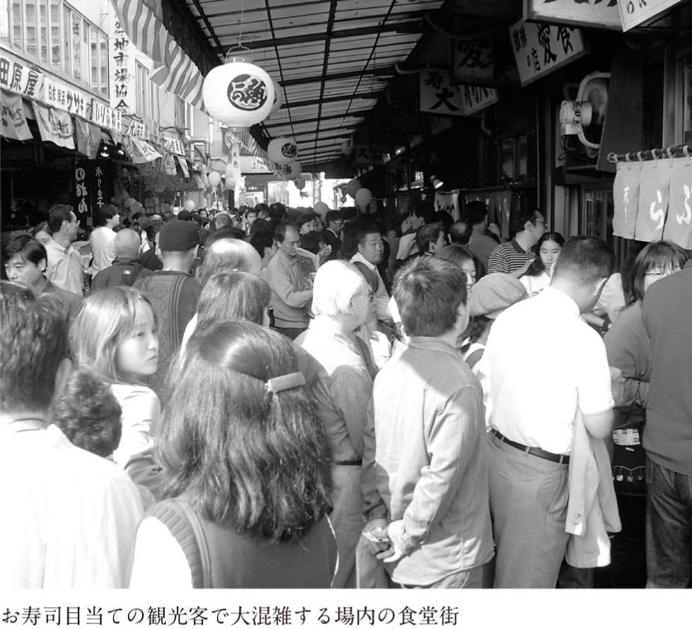

| 築地で食べる～場内・場外・"裏"築地～ | |
| 小関 敦之 | |
| (2004) | |
地下鉄大江戸線が開通してからというもの、築地を訪れる人の数は増加の一途を辿っており、土曜日ともなれば、年末のアメ横並みの混雑が、毎週のようにくり広げられている。
この一種の〝築地ブーム〟に合わせて、テレビや雑誌で築地が取り上げられる回数も飛躍的に増加。しかも、いわゆるグルメ番組や、街歩きの特集のみならず、若者向けのバラエティー番組や、ＯＬさん向けの雑誌などにも取り上げられ始めており、中高年だけでなく、より幅広いターゲットに向けて、築地が紹介されるようになってきたのだ。
また、築地専門のガイドブックも複数出版されるなど、いま、まさに〝築地ブーム〟が本格化しようとしていると言って間違いない。
ブームの盛り上がりを示すもう一つの証拠として、二〇〇三年の一一月二日に開催された「江戸開府四百年記念 築地市場まつり」が挙げられる。このイベントでは、大規模な宣伝がされなかったにもかかわらず、一三万人もの人が築地を訪れた。当日は、ありとあらゆる飲食店の前に長蛇の列ができ、また、通路という通路が、まさに立錐の余地もない大混雑となった。
さて、これまで築地関連の書籍というと、築地市場で働く人の視点による、世間からは隔離された市場内部の不思議世界を紹介するといった一種の内幕ものが主流であった。しかし本書では、築地を訪れる人の最大の関心事である、「いま、築地で本当に美味しい店」の紹介に最大の力点を置いている。
しかも、ガイドブック的に美味しい店を紹介するだけに留まらず、現在、築地で起きている新興寿司屋の開店ラッシュの背景を解説し、さらに、偏向したマスコミ報道にメスを入れたうえで、初心者の人でも確実に美味しい店に辿り着くための術を指南している点で、他の築地関連書籍やガイドブックとは趣を大きく異にする。
二〇〇三年四月、筆者はテレビ東京の人気番組「ＴＶチャンピオン」の築地王選手権で優勝し、〝築地王〟になった。築地王になってからは、ある種の使命感が宿り、ますます築地通いに力が入るようになった。幸いなことに、この街で商売を営む方々や、実際に飲食店を開いている方々とも親しくさせていただくことができ、外からではなかなか知りえないさまざまな事柄について教えを受けることができた。おかげさまで、この街に関する知識は、番組出演時に比べて、桁違いに増幅したと自負している。
本書に盛られた情報のすべてが、この街に日参し、自分の目と耳、そして舌で収集した、これまでの研鑽の結晶である。ご一読いただいた後、あなたの足が、食のワンダーランド築地へ向かったなら、筆者としてこれ以上の喜びはない。

目 次
築地といえば、圧しも圧されもせぬ東京の台所であり、その名前を知らない人はほとんど皆無であると思う。しかしながら、築地が東京のどこにあるのか知っている人は、逆に少数派で、実は銀座の隣町であることを告げると、驚く人がほとんどである。
私自身も東京に暮らして数十年になるが、築地に通い始めたのはここ数年であるし、まわりを見渡しても、実際に築地に足を踏み入れたことのある人はまだまだ少ない。
このように、築地とは、東京に住む人間にとっても、知っているようで実はよく知らない、「近くて遠い街」であったのではないだろうか。
築地に関しては、もともと、旨いものが集まるイメージは持たれていたように思うが、同時に、料理人や小売店のバイヤーなど、「食」のプロたちが買い出しに集まる、やや敷居の高い街と捉えられていたようにも思う。
しかし、最近の度重なるマスコミ露出により、「プロの集まる敷居の高い街」というイメージはだいぶ薄れ、代わりに、美味しいものに目のない人たちを中心に、「美味しい魚を食べに行く街」といったイメージが徐々に浸透しつつあるように感じる。
このように、これまであまり日の目を見てこなかった築地にスポットライトが当たり始め、築地に関心を持ち始める人が増えつつあること自体は、この街の魅力をより多くの人に知ってもらうべく、ホームページやメールマガジンを通じて、細々と情報発信を続けてきた身としては、諸手を挙げて歓迎したいことである。
しかしながら、同時に、築地をテーマにしたテレビ番組や雑誌の特集の画一的な描き方には、複雑な思いを強くしているのも、また、偽らざるところである。
「築地寿司戦争勃発」「築地で本当に旨い寿司屋××軒」などなど、テレビ番組にしても雑誌の特集にしても、築地を語るときには、とにかく、寿司をメイントピックにしたがる。
しかも、街全体が寿司屋一色で埋め尽くされているかのような（最近全国で増加しているフードテーマパークのような）印象すら与えかねない、極端な描き方が目につく。
このような描かれ方の裏には、番組や雑誌の特集を監修する人の頭に、「築地＝寿司の聖地」的なステレオタイプのイメージが存在しているからに他ならない。しかし、このようなイメージを持っているのは、必ずしもマスコミの人間に限らず、一般の人たちも、多かれ少なかれ、同様のイメージを抱いているのではないだろうか。
築地王に就任してからは、テレビや雑誌からの取材協力の依頼と同様に、友人・知人からも築地の案内役を頼まれる機会が増えた。
あるとき、以前より参加している勉強会のメンバーを築地に案内することになり、ガイド役を仰せつかった。築地の飲食店、特に紹介するに値する店は、個人経営の小規模な店がほとんどであるため、一時に大人数で押しかけることは無謀以外の何ものでもない。しかし、当初予測していたよりも参加希望者が多くなり、このときは、結局二〇人近くの大所帯になってしまった。
そこで、あらかじめ食事場所の希望を把握しようと、次のような選択肢を用意して、アンケートをとることにした。
〈選択肢１〉
「『築地に来たのに寿司を食わないなんて、六本木ヒルズに来たのにタワーに上らないみたいなもんだ』ということで、絶対寿司！」
〈選択肢２〉
「築地なら寿司なんて、マスコミに踊らされているみたいでまっぴら御免！ 築地で食うなら一仕事した〝焼魚〟か〝煮魚〟だ！」
〈選択肢３〉
「築地に来たなら、河岸の男と同じ釜の飯が食いたいぜ！ 築地らしいディープな食堂希望！」
寿司に人気が集中しそうだというのは予想がついたので、「当日は土曜日ですので、まともな寿司屋だと〝一時間待ち〟が予想されます」とまでアナウンスし、寿司希望者を少しでも減らそうとしたにもかかわらず、結果は、ほとんど全員が寿司を希望。
寿司以外を明確に希望したのはわずか一人で、改めて寿司人気のすごさ、とりわけ、「築地＝美味しいお寿司の食べられるところ」というイメージが強力に定着していることを、再認識させられる結果となったのだった。
このように、「寿司の聖地」のような扱いをされている築地ではあるが、実際にどれだけの寿司屋があるかというと、場内市場に一〇軒、場外市場に一六軒（二〇〇四年一一月現在）、その他、市場の外も含めると、「築地」という住所に店を構える寿司屋は約七〇軒と言われている。
「約」という曖昧な表現を用いているのは、本当に小さな路地にひっそりと隠れている店があったり、意外なロケーションにまだ見ぬ寿司屋が隠れている可能性があり、正確な数を誰も把握し切れていないためである。
いずれにせよ、居住人口比では言うまでもなく、人口密度ならぬ〝寿司屋密度〟でも、全国有数の寿司屋密集地であることには間違いない。
特に、場外市場では、二〇〇〇年には八軒だったものが、わずか四年の間に二倍に増加している。しかも、狭い通りを挟んで向かい合った場所に出店したり、一方が二四時間営業を始めると他方も追随したりと、「築地寿司戦争勃発」的な、いかにもマスコミが飛びつきそうなネタを提供しているのも、事実なのである。
築地、特に、場外市場に寿司屋が増えたのには、二つの理由がある。
一つは、バブル崩壊後、十数年の長きにわたって続いた不況。そしてもう一つは、今後一〇年内外に実施されると言われている、市場自体の豊洲への移転問題である。
この辺りをご理解いただくには、築地市場の構造についての説明が必要だと思うので、ここで触れておきたい。
築地市場は、大きく「場内市場」と「場外市場」に分かれている。一般の人から見て、最も端的な「場内」と「場外」の違いは、塀の中か外か、ということであろう。次のページの図を参考にしていただきたいが、塀ないしは門の中が「場内」、塀の外の新大橋通りと晴海通りに挟まれたエリアが「場外」であると考えてもらえれば、まず間違いがない。
「場内」は、正式名称を「東京都中央卸売市場築地市場」と言い、東京都が管理する業務用の施設である。私たちがよくテレビなどで目にする、マグロのセリや、飲食店の仕入れなどは、この「場内」で行われている光景である。
「場内」と「場外」の違いを、「セリが行われ仲卸があるのが場内（プロ用）、一般の人でも自由に買いものができるのが場外」と、機能面から説明している例を見かけることがある。たしかに間違ったことは言っていないが、この説明だと、一般客は「場内」に入れないかのような印象を与えかねず、事実、誤解する人が後を絶たない。
しかし実際は、「場内」には一般客でも利用できる〝魚がし横丁〟と呼ばれる飲食店街があり、ランチアワーには、市場で働く人たちに加え、近所のサラリーマンやＯＬで連日賑わいを見せている。
この飲食店街へは、言うまでもなくフリーパスで入場が可能である。さらに、少人数なら許可なく仲卸エリアの見学をすることもできる。一応、表向きは、「場内」仲卸エリアでの一般客の買いものは禁止されているが、上級者になると、仲卸から直接魚を購入する人がいるのも、また、事実である。
一方の「場外」も、先ほどの説明だと、一般向けの商店街のような印象を受けるかもしれないが、そうではない。最近でこそ、「開かれた市場」を目指し、土曜日を中心に一般客の誘致に熱心ではあるが、基本的にはプロ対象の市場である。そのため、「場外市場」で扱われている商品も、「場内市場」となんら遜色ないことは、ぜひ認識しておいてもらいたい。
第二章で詳しく説明するが、現在「場外市場」がある土地は、その昔は築地本願寺の門前町であった。そして、関東大震災後に魚河岸が日本橋から築地に移転した際、その補完的な営業をするために、佃煮や海産物、珍味、漬物、料理道具などの店が次第に集まり、市場を形成したのが「場外市場」の始まりであって、誰かの手によって組織されたものではない。
このように、自然発生的に形成された市場であるため、「場外市場」には全体を統括する管理者が存在しない。これが、東京都の管理下にある「場内市場」との最大の相違点である。
この「場外市場」、高度経済成長期には、個人商店や地元に密着した小規模スーパーを相手に大いに活況を呈し、大きな利益を上げた店も少なくなかった。なかには、不動産を取得し、二店、三店と商売を大きく広げた店も多かった。
ところがバブルの崩壊後、延々と続く不況と、同時に起きたデフレの進行で、大手流通業者と産地の直取引が増加。いわゆる「中抜き」により、市場の存在価値自体が相対的に低下し、取引規模が大幅に縮小。その結果、商売が立ち行かなくなり、廃業する店も増えてきた。
そこにもってきて、豊洲への移転問題が浮上。いつ市場がなくなるかわからない状況のもとでは、問屋業を新たにやろうという借り手が見つからない。
そこに目をつけ、入り込んできたのが、バックに比較的大きな資本を持つ、新興の寿司屋であった。
築地といえば、もともと、築地とは何の縁もゆかりもない店ですら屋号につけたがるほど、寿司屋にとっては、喉から手が出るほど欲しいブランドである。ましてや、実際に店舗を築地に構えているとなれば、その店にとって、これ以上のブランド価値を向上させる手立てはない。
さらに、先に述べたように、築地自体が、昨今のマスコミ露出の増加で、観光客も含め一般客が続々と、それも「寿司を食べに」やってくる場所へと変貌を遂げている。となれば、一攫千金をもくろむ彼らにとって、これほどおいしいビジネスチャンスが転がっている街は他にはない。
ということで、それこそ「あっ！」という間に、寿司屋ばかりが軒を並べるようになってしまったというのが、「場外市場」の寿司屋出店ブームの顛末である。
これらの新興の寿司屋は、もともとが商売熱心である。派手で目につく店構えや、店先での熱心な客引き、さらには「二四時間営業・年中無休」と、ありとあらゆる手段を使って集客を図り、しかも、ここまでのところ、これが結構、商売的にはうまくいっている。
もちろん、これらの店が美味しい、まっとうなお寿司を提供してくれているのであれば、二四時間営業をしようが、店頭で派手な呼び込みをやろうが、何の問題もないのだが、残念ながら、眉を顰めざるをえない店が少なくないのが現状である。詳しいことは第三章で述べるが、代用魚（似てはいるが、全く別の魚）や明らかに鮮度の悪い魚を出したり、ご飯の固まりに魚の切り身を乗っけているだけの、寿司とは言いがたいものを出したりと、とても〝築地の寿司〟と思ってほしくないところも多々ある。
さらに悪いことには、場外での寿司屋の開店ラッシュ（加えて、それらの店が結構うまくいっていること）に刺激され、場内の食堂街まで、それまで中華丼から刺身定食まで出す食堂だった店やおでん屋が、どんどんと寿司屋や海鮮丼屋へと商売替えをしてしまい、にわか寿司屋ばかりが増える結果となってしまったのである。
そもそも、私も含めて、毎日のように築地に足を運ぶ人間が、いつもいつも寿司ばかりを食べているわけはない。市場で働く人間は、早く・安く・スタミナのつくものを欲しているのであって、行列をして寿司なぞ食うわけがない。多少時間に余裕のある近隣のＯＬやサラリーマンにとっても、毎日寿司を食うはずもなく、寿司屋ばかりが増えてしまうのは、食事の選択の幅が狭まるだけで、いいことは何一つないのである。
つまり、寿司屋の増加は、この街の常連にとっては、美味しいものが食べられる街としての魅力の低下でしかないというのが本音なのである。
となると、結局のところ、これら新興の寿司屋にとっていちばんのお客さんは観光客ということになる。
「観光地に旨いものなし」という言葉があるように、一度限りのお客を相手にする店と、これまでの築地では常識であった常連客を相手に商売をする店と、どちらが、日々自分たちがお客に提供するものに対して厳しくなれるかは、自明の理であろう。
観光客の場合、非日常空間にいるため、築地という独特の雰囲気に惑わされ、マスコミに紹介された店であれば、マズいものでも美味しく感じる人もいるかもしれない。しかし、反面、「築地の寿司」に対して過度の期待を持って来る人もいる。後者の人にしてみれば、「せっかく築地まで行って、寿司を食ったのに、ぜんぜんたいしたことなかった！」というネガティブな感想だけが残ることになる。
その人ひとりが、「美味しくなかった」という感想を持つだけなら、たいして大きな問題ではないのだが、ときはまさにインターネット時代。噂、特に悪い噂は、電波に乗ってあっという間に広がる可能性がある。
以前、札幌在住の知り合いが、「札幌には、一〇〇〇軒以上のラーメン屋があるのに、一軒か二軒の、しかも観光客相手の店に足を運んだだけの人が、『札幌のラーメンはたいしたことない』なんて我が物顔で語っているのは許せない」と嘆いていたが、築地に関しても、いずれ私自身が同じような思いをさせられるのではないかと、内心ヒヤヒヤしている。
冷静に考えてもらえば、そもそも、中央卸売市場という特殊な業務用施設が街にあるだけで、築地という街が「普通の街」であることは、容易に理解してもらえると思う。
マスコミ的には、「築地は食の中心地。プロの舌を満足させる築地の飲食店はどこも旨い」というように描きたいのは心情的には理解できなくもないが、それは事実ではない。
たしかに、それこそ日本を代表するような一流シェフが足繁く通う店など、「さすが築地！」と思わず膝を打ちたくなる店も存在はするが、マズい店はきっちりとマズい。
一昔前のラーメン情報番組では、タクシーの運転手さんから情報を入手し、それをもとに構成した番組が多かったように記憶している。タクシーの運転手さんたちは仕事柄いろいろな場所に行くので、美味しいラーメン屋の情報に詳しいに違いないという勝手な思い込みをベースにした番組づくりだが、いま考えるとナンセンスとしか言いようがない。
もちろんタクシーの運転手さんのなかにも、ラーメン好きの人はいただろうし、それこそ、いろいろな場所に行けるという商売上の利点を最大限に生かし、一般の人には考えもつかない膨大な情報を持っている人もいただろう。しかし、その数は、間違いなくホンの一握りであって、大方の運転手さんにとっては、ラーメン屋情報など取るに足らない話であったに違いなく、「タクシーの運転手さんはラーメン屋情報に詳しい」などという思い込みは、いまとなっては笑い話でしかない。
また、彼らの本業は、運転および目的地までの案内であるが、その本業である運転ですら、すべての運転手さんが好きであるという保証はない。あくまでも運転は彼らの職分であって、趣味嗜好とは別のものさしで語られるべきである。
同様に、築地で働く人々にしても、職業として仲買人であったり、バイヤーであったり、トラックの運転手であったりするだけで、皆が皆、食べることに対して人並み以上のこだわりを持っているわけではない。
しかも、築地に仕入れに来る人や築地で働く人には、のんびり食事をしている時間的な余裕がない場合の方が多く、席に座ったら、すぐ目の前に食べものが出てくるくらいのスピードが要求される。
「二分も待たせてちゃ、お客さんがどっかに行っちまう！」と、麺が伸びやすくなるのを承知のうえで、スピードを重視して、茹で時間の短い麺を使うラーメン屋が存在するほどなのに、ましてや、行列の寿司屋に並んでまで食べる人なぞ、ほとんど皆無と言っていいだろう。
つまりは、「築地は食の中心地。プロの舌を満足させる築地の飲食店はどこも旨い」などという話は、実体のない幻想にしか過ぎないのである。
何度でも言うが、築地という街は「普通の街」であって、他の街と同様に、旨い店もあればマズい店もある。
たとえ、近くに世界一取扱量の多い水産市場があろうとも、それぞれの店を運営し、実際に料理をつくってお客さんに提供しているのが人間である以上、すべての店が美味しいなどということは、絶対にありえない。新鮮な魚が手に入りやすいことと、出される料理の味に絶対の相関関係などなく、先ほども述べたように代用魚を出す店もあれば、そもそもの料理の腕がよくない店もたくさんある。
旨いものが食べられるか否かは、ロケーションの問題ではなく、提供する人間の姿勢と腕の問題なのである。
さらに言うなら、そもそもの「新鮮だから旨い」というのも、誤解の一つだ。
一般に魚に関しては、とかく鮮度が重視される傾向にある。たしかに、一部の青魚のように鮮度が最重視される魚もあるが、すべての魚がしめたてが食べ頃というわけではない。
魚も肉などと同じく、しめた後には筋肉の硬直が始まり、その過程で体内の旨味成分であるイノシン酸が増加する。体内のイノシン酸がピークとなる段階を過ぎると、今度はイノシン酸が分解されるとともに、魚体硬直が解け、やがて腐敗へと向かう。したがって、魚体の硬直が解ける前後の、体内にイノシン酸が最も多く含まれている状態が一般的には食べ頃となるのだが、魚の種類によってもまた、事情が異なる。
ヒラメのようにコリコリとした歯ごたえを楽しむ魚は、硬直している段階が食べ頃であるし、サバのように魚体硬直の段階で品質が低下する魚は、早めに食べなくてはいけない。また、マグロのような赤身の魚は熟成が遅く、魚体硬直が解けてからが食べ頃となる。
このように、ある程度の時間をおいた方が旨味を増すものがあったり、時間によって食感が変化したりと、魚の種類によって、いちばん旨い時間帯が異なるものなのである。
そのため、魚を最高に美味しく料理するには、料理する人間の経験に裏打ちされた知識が必要となるのは言うまでもない。
また、一般的に、寿司や刺身に代表されるような〝生食〟が好まれる傾向があるが、これまた、必ずしも魚のいちばん美味しい食べ方であるとは限らない。
塩と時間で引き出す魚の旨味、じっくりと時間をかけて臭みを抜いて引き立てる魚本来の滋味。生で食べるよりも一層食味が向上するように一手間かけられた〝煮魚〟や〝焼魚〟にこそ、魚を知り尽くしたプロのいる築地ならではの醍醐味がある。
築地に関する勘違いはまだある。
「食べ手サイドが発信する唯一の築地食べ歩き情報」というのが、私が主宰しているホームページ「築地市場を食べつくせ！」のコンセプトである。
このようなサイトを運営していると、日本中からさまざまなご質問をいただくのだが、そのなかでも最も多い質問に、実はいつも頭を悩ませている。
その質問とは、「安くて美味しいお店（寿司屋）を教えてください」というものである。
「市場」という言葉からの連想なのだろう、築地に「安さ」を期待する人が実に多い。しかし、正直に言うと、これも築地に関する幻想、または、大いなる勘違いである。
寿司屋を例にとると、築地での一人前のセット料金は、だいたい二〇〇〇円から三五〇〇円くらいである。「えーっ、そんなに高いの！」「自分のランチの予算は一〇〇〇円だよ！」という声が聞こえてきそうだが、同じレベルの寿司を隣町の銀座で食べるとなると、五〇〇〇円は下らないはずだ。
このように「相対的」に考えると、築地は十分に安いと言えるのだが、なかには、一人前二〇〇〇円から三五〇〇円という金額そのものを見て高いと考える人がいる。これらの人が求める、たとえば、〝一五〇〇円で食べ放題〟といった「絶対的」な安さを求めると、それこそ、飛んで火に入る夏の虫。安い寿司に群がる魚たちを一網打尽にしようと仕掛けられている罠にハマる結果となる。
最悪の場合、それこそ近所の回転寿司と大差ない寿司を、行列までして食べて帰る羽目にもなりかねないので、築地に来るにあたっては、単純な安さ追求はタブーであると認識すべきで、ある程度の出費は覚悟していただきたい（この辺りのことは、第三章でもっと詳しく解説する）。
さて、こうなると、事前の情報収集がこの街で美味しいものにありつくためにはたいへん重要となるが、この情報がまた心もとない。
テレビや雑誌で、ラーメン屋などの飲食店が扱われるとき、いつもいつも同じ店が出ていると感じたことはないだろうか？
ラーメン好きの私は、ラーメン番組や雑誌のラーメン特集があれば必ず見るようにしているが、ずっと取り上げられる店に偏向があるように感じていた。だから、取材対象となる店がどのように決定されるのか、たいへん興味があった。
「ＴＶチャンピオン」に出場した際に、たまたま、あるタウン情報誌の編集者が出場していたので、彼にその疑問を投げかけてみたのだが、その答えは、私にとってたいへん衝撃的なものであった。その後も、何度か、築地に関して取材協力を請け負った際に、別の編集者からも言質をとったのだが、その答えはどれもほぼ同じものであった。
彼らによると、取材されやすい飲食店の第一条件とは、その飲食店が取材に協力的であること。さらには、取材者側の意図を汲み取ってくれることらしい。
ラーメン番組では、取材拒否の店に敢えて取材を強行し、怒られて追い出されること自体を面白がる自虐的な演出のものがあったりするが、築地の場合、まだラーメンほどにはマスコミに取り上げられる機会は多くないので、他の特集と差別化を図る必要がない。そのため、圧倒的に取材に対して協力的な店が選ばれる傾向にある。
そして、二つ目の条件とは、見栄えのする「絵」（ビジュアル）がとれることである。
テレビにしても雑誌にしても、飲食店を紹介する際には、美味しそうな「絵」があるとないとでは、見る側に与えるインパクトに雲泥の差が出る。そのため、スキンヘッドの恐そうな風貌の親父がいたり、多少奇妙でもいいからその店のオリジナルメニューがあったりと、ビジュアル栄えするお店の方が取材を受けやすい。
特に、寿司の場合、基本的にはネタとシャリのみで構成されているので、一見、店によって差が出づらいこともあり、やたらやかましい呼び込みがいたり、店頭でショーをやっていたりと、寿司そのもの以外に何か「絵」になる要素があると圧倒的に有利だ。
すなわち、私たち消費者にとって最も重要なことである「その店が旨いか、マズいか？」という問題は、情報を発信するマスコミにとっては、二の次、三の次なのだ。たいへん悲しいことではあるが、現実として受け止めざるをえない。
さらにもう一つ重要なことは、番組制作に携わる人間は、あくまでも、手がけなくてはいけない数多くの企画の一つとしてラーメンや築地を取り上げるのであって、決して、もともとラーメン屋や築地の街の情報に精通しているわけではないということだ。
この際、事情に通じた専門家をブレーンに抱えていれば、ある程度、情報の鮮度・クオリティーは保証されるが、予算や時間の制約上、必ずしもそういう恵まれた例ばかりではなく、他番組・他誌で取り上げられた情報を使いまわすことも多々ある。結果、いつもいつも同じ店が紹介されることになるのである。
以上が、美味しいお店を探す際に、マスコミ情報を鵜呑みにしてはいけない理由であり、築地においても残念ながら同様なのである。
〝築地王〟という立場上、築地の美味しい店の情報に関しては、友人・知人、はたまたホームページを通じて、日本中の方から問い合わせをいただく。それらを見るにつけ、多くの方々が、現実と乖離した勝手な築地像を描いていることを痛感せざるをえない。
この章の冒頭でも述べたが、築地の魅力を一人でも多くの人に知ってもらいたいと情報発信を続けている身としては、この街に関心を抱く人が増えること自体はたいへん喜ばしいと思っている。と同時に、せっかく築地に遊びに来るのであれば、本当に美味しいものを食べていってほしいとも思う。そのためには、まずは、これまで説明してきたような勝手な思い込みを捨てて、冷静にお店選びをしていただきたいと切に希望する次第である。
築地市場はどこにある？
名前は知っていても、築地市場が正確にどこにあるのか知らない人は、東京に住んでいる人のなかでも珍しくない。
東京都中央区築地５丁目２番１号。
これが、「築地市場」、正式名称「東京都中央卸売市場築地市場」の所在地である。
水産市場が有名なので、港の近くにあると思い込んでいる人がいるが、実は、隅田川のほとりにある。ちなみに、水産市場だけではなく青果市場もあり、大田市場に次ぐ都内２番目の規模である。それでも取扱規模では、水産物が青果を圧倒していることから、「築地＝魚の市場」といったイメージが強くなっている。
下の地図で確認していただくとよく分かると思うが、日本一の繁華街・銀座や、最近再開発された汐留や新橋に隣接しており、繁華街やオフィス密集地からも至近距離、いわば東京のどまんなかに築地はあるのである。
築地市場へのアクセス
築地市場の最寄り駅は、都営地下鉄大江戸線の「築地市場」駅。東京メトロ日比谷線の「築地」駅からでも、十分に歩ける距離だが（１番出口から市場正門まで徒歩約７分）、「築地市場」駅のA1出口を出れば正門のすぐ脇に出るので、方向音痴の方には、こちらが断然おすすめである。ＪＲだと「新橋」駅がいちばん近く、駅からは「築地中央市場行き」のバスも出ている。
ときどき、地方在住の方から、「東京」駅からのアクセスを聞かれるが、車でもそう遠くない距離なので、タクシーのご利用をおすすめしている。電車で行けないこともないが、いくつか複雑な乗り換えをしなくてはいけないため、迷わずに行くためにはタクシーの利用が確実である。
築地に来るならこんな恰好
未開のジャングルや、厳寒の地にあるわけではないので、仲卸エリアに足を踏み入れない限り、普通の恰好で平気である。実際、お昼どきには、周辺のＯＬやサラリーマンが、普段の勤務時となんら変わらない恰好で食事に来ている。一つアドバイスするとすれば、市場内はターレット（荷物運搬用の車）が走り回っていて危ないので、動きやすい恰好の方がいいだろう。
逆に、仲卸エリアに入ってみたいと思うのであれば、できるだけ汚れてもいい恰好が無難だ。なかには生簀もあるし、マグロの解体を行っているところもある。魚の欠片が飛んできて服が汚れても、文句は言えないのである。
特に、床は常にビシャビシャに濡れていて、滑りやすくなっているので、靴には細心の注意が必要だ。
明治時代、築地は東京で最もモダンでハイカラな街であった。
「築地市場」という、その名を海外にも轟かすランドマークを持つが故、いまではすっかり魚の街のイメージが定着している築地なので、意外な思いをされる方も多いと思うが、これはまぎれもない事実である。
この例だけでなく、築地というと魚市場のイメージが強過ぎて、その他の側面、特にその歴史に関しては、ほとんど知られていないというのが実情ではないだろうか。
また、築地市場についても、知られているようで、実は「日本を代表する大きな魚市場」くらいの認識で、その他については、あまり多くは知られていないように感じる。
そこで、本章では、築地の街と築地市場の歴史的な成り立ちを紐解きながら、築地がいつから旨いものの街になったのか探っていきたいと思う。
築かれた土地という名前が示す通り、築地一帯は、もともとは海であった。
いまから約三五〇年前、江戸は明暦の大火（明暦三年・一六五七年）と呼ばれる大火事に見舞われる。焼死者一〇万人以上、歴史にその名を残すこの大火によって、江戸市中はその三分の二が焼け野原になったという。
この大火により、江戸城をはじめ、大名・武家屋敷、寺社、町屋などの多くが壊滅的な打撃を受ける。しかし、この大火をきっかけにして、区画整理や神社仏閣の移転、広小路・火除土手の設置などが進み、皮肉なことに、江戸の町は都市としての整備が加速されていくことになる。現在の築地一帯も、この大火の後の都市整備の一環として埋め立てられ、築かれた土地なのである。
浅草近くの横山町にあった京都の西本願寺の別院（現在の築地本願寺の前身）も、この大火によって焼失。市中の再整備を進めていた幕府から、再建のため下付されたのは、もとあった横山町ではなく八丁堀の海上であった。そこで、本堂再建のために海を埋め立てることになったのだが、この工事に奉仕したのは、徳川家康の命により、大坂から佃島に移っていた本願寺門徒衆の漁師たちで、彼らが中心となって築きあげた土地「築地」に、本願寺の仮本堂が建てられたのが延宝七年（一六七九年）。築地の街はこうして始まったのである。
ちなみに、築地市場の海幸橋門のたもとにある波除稲荷神社も、この頃に創建されたものである。実は、この神社の建立には、築地地区の埋め立て工事と切っても切れない深いつながりがある。
少し長くなるが、波除稲荷神社のホームページにある「波除稲荷神社の由来」から、神社が創建された経緯を引用してみよう。
「（前略）明暦の大火の後に４代将軍家綱公が手がけた最後の埋立の工事で困難を極めたのが、この築地海面でした。堤防を築いても築いても激波にさらわれてしまうのです。或夜の事、海面を光りを放って漂うものがあり、人々は不思議に思って船を出してみると、それは立派な稲荷大神の御神体でした。皆は畏れて、早速現在の地に社殿を作りお祀りして、皆で盛大なお祭をしました。ところがそれからというものは、波風がピタリとおさまり、工事はやすやすと進み埋立も終了致しました。萬治２年（１６５９）の事です。」
以来、今日に至るまで、波除稲荷神社は、築地一帯の氏神として、街の発展を見守り続けているのである。
明暦の大火の後の埋め立てで土地が築かれると、築地地区および隣の明石町周辺には、諸大名の藩邸や幕臣の居宅が次々と建てられ、明治維新まで、この一帯は大名屋敷街の趣を呈することになる。
そのなかには、忠臣蔵でおなじみの浅野匠内頭の播磨赤穂藩浅野家の上屋敷（地図上❶）があり、いまの聖路加病院の辺り一帯、八九〇〇余坪にわたって広がっていた。しかしその土地も、元禄一四年（一七〇一年）、吉良上野之介との一件でお家断絶となり、一切取り上げられてしまい、いまでは、小さな案内板が歴史の事実をひっそりと伝えているのみとなっている。
また、この大名屋敷街のなかにあった豊前中津藩邸では、安永三年（一七七四年）、藩医・前野良沢が杉田玄白らとオランダの解剖書ターヘル・アナトミアの翻訳『解体新書』を完成させる。杉田は後に、そのときの様子を、自著『蘭学事始』のなかで述べている（❷）。
また、それより八〇年あまり後の安政五年（一八五八年）、同じ中津藩の福沢諭吉が、後の慶應義塾大学の母体となる蘭学塾（❸）を開いたのも、同屋敷内の長屋であった。
このように、大名屋敷街として、さまざまな歴史を刻んだ築地界隈であるが、そのほとんどは歴史の波のなかで風化してしまい、面影を残していない。現在の築地一帯で、当時の面影を残すのは、築地市場の南西に位置する「浜離宮恩賜庭園」が唯一と言ってもいいだろう。
浜離宮恩賜庭園は、もともとは将軍家の鷹狩の場所であったが、承応年間（一六五二～五五年）に甲斐甲府藩主・松平綱重の別邸となり、次いで六代将軍徳川家宣が「浜御殿」と改称。大幅な改修を行い、庭園として景観を整えた。その後、明治期には宮内庁所管となり、名称も「浜離宮」と改められ皇族宴遊の地となった。また、諸外国の貴賓が来訪した際には、敷地内に設けられた石造洋館「延遼館」（❹）が迎賓館として用いられた。
現在でも、園内に潮入庭園などを残し、往時を偲ばせる景観が残っており、多くの観光客が集う東京の観光名所の一つになっているのはご存知の通りである。
ちなみに現在、築地市場がある場所は、寛政四年（一七九二年）、幕府老中・松平定信が一万七〇〇〇余坪の地を得て隠居したところで、天下の名園と謳われた「浴恩園」（❺）があったところである。
この庭園は、江戸湾に臨んだ風光明媚さで有名だったが、現在では、市場の敷地の片隅にある小さな社と、正門の壁に設置されたプレートのみが、かつてここに浴恩園があったことを伝えているだけで、その面影を見ることはできない。
時代は移って、幕末の安政四年（一八五七年）。幕府は現在の築地六丁目にあたる隅田川に面した一角に、旗本や御家人を対象にした軍艦操練所（❻）を開講する。
その後、明治維新を経て、教授所の跡地は海軍省の管轄となり、海軍操練所（海軍兵学寮の前身）が設置されたのをはじめ、築地周辺には数多くの海軍施設がつくられる。
海軍の施設が続々とつくられたのに相前後して、現在の築地の隣町・明石町には外国人のために築地居留地（❼）が設けられた。外国人居留地の設置は、日米修好通商条約で、幕府が江戸開市に伴い諸外国と取り決めたものであったが、完成を待たずして幕府が崩壊してしまったため、明治新政府によって引き継がれたものである。
外国人居留地に指定されたのは、公式には明石町だけだったのだが、旧住民の立ち退きが遅れ、造成に時間がかかったため、結局、当時は南小田原町と呼ばれていた現在の築地六、七丁目辺りと、明石町の北側の湊町や入船町も、「相対借地」として、外国人に開放されることになり、この一帯全体が外国人居留地として認知されることとなった。
また、明石町に外国人居留地が置かれたのとほぼ同時期に、東京で初となる外国人専用ホテル「築地ホテル館」（❽）が、勝鬨橋からほど近い、いまの駐車場ビルのあたりにつくられる。
このホテルは米国人建築家プリジェンス設計、幕府の御用大工・二代目清水喜助施工の和洋折衷の建築で、七〇〇〇坪の敷地に、木造三階建て（一部四階建て）、海鼠壁と鐘堂のある鐘塔を持ち、計一〇二部屋の堂々たる建物であった。その豪壮な姿は、当時の人々の目には、文明開化のシンボルとして、いかにも眩しく映ったのであろう。すぐに新しい東京の名物となり、錦絵などにも盛んに取り上げられた。
アーチ式の屋根やバルコニー、さらに、各部屋には暖炉、玉突き場、食堂などを備えた、当時としては本格的なホテルであったのだが、明治五年（一八七二年）二月、銀座・築地界隈を焼いた大火事により惜しくも消失し、五年弱の短い歴史にピリオドを打った。
外国人居留地には、九カ国の外国公使館と領事館が設置され、さらには、現在の税関にあたる運上所も置かれて、海外からの人と情報の入口として機能することになった。
こうして、明治維新直後から、築地界隈は東京で最も外国に近い、異国情緒溢れる街となっていったのである。
さらに、明治政府は、居留地を首都・東京発展のための貿易拠点として位置づけ、そのためのインフラ整備を行っていった。当時、西洋文明の入口となっていた横浜と東京を結ぶ我が国初の鉄道が新橋を起点としたのも、新橋が築地の外国人居留地と、当時外国人貴賓客の迎賓館となっていた浜離宮の延遼館から近いということが理由であった。
また、鉄道が開通したことにより東京の表玄関となった新橋と築地の外国人居留地とを結ぶ導線となった銀座を、明治五年の大火の後、赤煉瓦造りの欧風の街並みに整備したのも、築地居留地を訪れる外国人を迎えるためであった。つまり、築地の居留地の存在こそが、後年まで続く、ハイカラな舶来文化のイメージを銀座に与えた発端であったのである。
その他、居留地からは、明治学院（❾）、立教大学（❿）、女学院（⓫）など数々のミッション系の学校が誕生し、現在でも多くの「学校発祥の地」を示す碑を目にすることができる。
さらに、この居留地を中心とした築地界隈は、電信事業、製靴工場、パン工場、洋品店、人力車、活字印刷、指紋研究、洋式造船、街灯など、さまざまな近代文明・近代産業の発祥の地となった。まさに、築地界隈は、「文明開化」の先端を行く街であったのである。
ここまで、築地の街の歴史的成り立ちを見てきたわけだが、美味しいものが食べられる街としての築地も、この頃に端を発する。
「元祖築地の美味しいもの」、それは、魚ではなく、西洋料理であった。
築地ホテル館が焼失した後も、築地・明石町界隈には、いくつもの外国人用ホテルがつくられた。そのなかには、当初、西洋料理店として開業し、後にホテルを併設した「築地精養軒」（⓬）があった（ちなみに、この築地精養軒は、森鷗外の『舞姫』のモデルとなったエリスが鷗外の後を追って来日した際、投宿していたことで知られている）。
この精養軒は、後に、東京における西洋料理店の草分け的存在として語り継がれることになるが、当時より「宿泊の帝国ホテル、料理の築地精養軒」と呼ばれるほど、料理の評判が高い店であった。残念ながら、関東大震災で焼失し、すでに支店として開業していた上野を本店として、精養軒は築地を離れてしまうのだが、「美味しいものが食べられる場所」としての築地を印象づけたハシリの店として、精養軒の名前は記憶に留めておいていただきたい。
築地精養軒が最後にあった場所には、その後、銀座東急ホテルができ、現在は時事通信社の本社が建っている。その一階部分には、「銀座うかい亭」という素晴らしいステーキレストランが入り、いまでも、連日多くのお客さんが美味しい料理に舌鼓を打っている。
まさに、「歴史はくり返す」であり、この地域の持つ「美味しいものが食べられる場所」としての宿命を感じると言ったら、大袈裟であろうか（現在の住所は築地ではなく、銀座五丁目となっている）。
これまで見てきたように、いまから一〇〇年ほど前、築地の街は、東京で最も異国情緒溢れるハイカラな街であった。その事実は、すでに時代の流れのなかに埋もれつつあるが、築地精養軒のつくった「美味しいものが食べられる場所」として名声は、築地市場がこの地にできることによって、図らずとも継承されていくことになる。
ときは変わって大正一二年（一九二三年）、未曾有の大地震が東京を襲った。死者・行方不明者約一四万二八〇〇人を出したこの大惨事は、それまで築地地区にあったハイカラな街並みを破壊し尽くした。それだけではなく、それまで日本橋にあった魚河岸、俗に大根河岸と言われた京橋青果物市場にも大打撃を与えた。
かねてから移転話のあった日本橋の魚河岸は、一時暫定的に芝浦へと移され、その後、当時海軍の土地となっていた現在の築地市場へと移転することになり、さまざまな紆余曲折を経て、昭和一〇年（一九三五年）、ついに築地に「中央卸売市場」が誕生することになる。
震災から正式に築地に中央卸売市場が開設されるまで、一〇年以上の年月を要したことからも推察されるとおり、魚河岸の築地移転は一朝一夕にことが進んだわけではなかった。この辺りの話を、ジャーナリストの小林充氏は『築地のしきたり』（生活人新書／ＮＨＫ出版）のなかで、こう述べている。
「築地に魚河岸が移転したといっても、日本橋の魚河岸がそのまま空間移動しただけの話で、現在のような中央卸売市場という新形態になるのはずっと後、昭和一〇年を待たなくてはならない。いずれにしても、芝浦居座り派、日本橋復帰派などとのすったもんだのあげ句、ようやく築地開場と相成った。もっとも日本橋以来の店であっても、軒並みシマ（場内）の中に出店できたわけではなかった。一部はあぶれ、築地川と東支川を挟んだ地にもう一つの市場を形成した。これがいわゆる〈場外〉である。」（次ページ）
現在、築地市場が「場内」と「場外」という二つの市場に分かれ、一般の人には極めて分かりづらい構造になっているのは、歴史的な成り立ちに理由があったのである。
すったもんだのあげ句、ようやく市場は築地に移転されたわけだが、では「どうして築地に？」だったのだろうか。これは、「たまたま、築地に手頃な土地があったから」というのが、正確な答えかもしれない。
実は、まだ日本橋に魚河岸があった明治の後半くらいから、交通と安眠の妨げになるとの理由で、市場の移転問題がとりざたされており、具体的な案がいくつも挙がっては、さまざまな人間の思惑が絡んで、延期され続けてきた経緯があった。
そこに、関東大震災が発生。壊滅的な打撃を受けた日本橋や京橋の市場に代わって、新たな市場の再建が市民生活復興の第一歩として急務となった。その際、たまたま手頃な土地として手当てできたのが、当時海軍省の所轄であった築地海軍技術研究所の敷地、すなわち、現在の築地市場の土地だったのである。
築地に中央卸売市場を設置するにあたっては、この期に及んで、日本橋に復帰を図ろうとする一派もいたものの、移転を既成事実化したい行政の強権もあり、最終的には、築地で落ち着いたというのが、築地に市場ができた顛末である。
さて、その後は東京の台所として、世界に冠たる大市場に成長した築地市場ではあるが、築七〇年を超えることもあり、寄る年波には勝てず、いたるところで老朽化が目立ってきた。また、施設自体も過密化し、キャパシティーが足りなくなってきたこともあって、新たな市場の整備を求める声が高まってきた。
いったんは現在の場所での再整備案で決まったかに見えたが、「平成八年四月、東京都卸売市場審議会から、『工期の短縮及び建設コストの縮減等の視点から、現行基本計画の見直しを行う必要がある』との第六次東京都卸売市場整備基本方針が答申され」（東京都庁のホームページより抜粋）、地元商店組合や中央区などから反対が出されるなか、七〇年前と同様にすったもんだのあげ句、現在の場所から二キロ離れた江東区の豊洲へ移転が決定した。
ちなみに、移転時期は、東京都の発表では平成二四年～二八年度となっているが、移転予定地は交通の便が悪く、現在、急ピッチで道路整備などが行われているものの、その他にも解決しなくてはいけない問題も多く、予定されている時期にはたして開場されるかどうかはまだ未知数である。
さて、市場が移転となった場合、東京都が管理している「場内市場」で営業している事業者は一緒に移転となるが、「場外市場」はすでに述べたとおり東京都の管理施設でないため、いまの場所に留まることになる。市場が移転となった場合、場外市場で商売を営む事業者にとっての打撃は計り知れない。なんといっても、隣にあった、世界に冠たる市場がなくなってしまうのである。
市場移転のインパクトの大きさは当事者が最も痛切に感じているところであり、だからこそ地元商店組合は移転に関して大きな反対運動も展開したのである。しかし、これからは、自分たちの力で集客し、商売を成り立たせなくてはいけない。
これまでのプロを対象とした商売から、「築地」というブランドを生かし、一般客を相手とした、新たな「食」の街への転換も選択肢の一つであろう。また、都心のどまんなかという地の利を生かした、全く新たな街への転換もありえない選択肢ではない。
いずれにせよ、この街が大きな変革の波に再び晒されようとしていることは間違いがない。
東京の胃袋を支える築地市場
築地市場が、東京の巨大な胃袋を支える拠点として、日本はもとより、世界で一、二を争う巨大市場であることはご存知の通りである。
では、どのくらい巨大な市場なのか？
敷地面積は、23万836㎡、東京ドーム約５個分の広さである。巨大なのは敷地面積だけではなく、取扱高も、水産物が１日に平均2344ｔ、青果物が1388ｔ（金額にして、それぞれ、19億7100万円と３億4800万円）と莫大だ。東京で取引される水産物の約９割、青果の約２割が、ここ築地で取引されているのである。
当然、この市場を訪れる人も多く、１日に訪れる入場者は約４万9000人。そのうち、買い出し人は約３万5000人であり、出入りする車両の数は、１日約２万5000台だ。
余談だが、交通事故も多く、平成14年は対物事故が年間139件、対人事故が151件も発生したという。ごみの量も半端ではなく、１日平均約66ｔが排出される（データはすべて「築地市場概要 平成15年版」より）。
日本には、「卸売市場」と名のつく市場が1437カ所ある（平成16年現在）が、築地市場の取扱高はダントツの１位であり、築地は、名実共に、日本を代表する市場なのである。
仲卸エリアは扇形
さて、築地市場を上から見ると、扇形になっているのが分かる（地図参照）。これは、市場がこの地にできた際、鉄道の引き込み線を狭い土地に入れたことに由来する。
築地市場が開設された昭和初期は、現代とは違って、まだまだ鉄道が重要な輸送手段であった。無論、引き込み線のプラットホームは、お互いまっすぐ平行になっているに越したことはない。しかし、第二章で説明したように、築地への移転は、関東大震災のために急遽決まったものだ。とにかく、一刻も早い市場の再建が急務であり、敷地の余裕など二の次だったのであろう。仕方なく、放射線状にプラットホームが置かれ、市場は扇形になったのであった。
さて、扇形をしているため、当然、建物の内部にある店は、売場面積が異なることになる（外側になるにつれて広くなる）。この不平等を解消するため、何年かに１度、店舗の配置換えが一斉に行われる。この配置換え、その昔は毎年行われていたらしいが、費用も労力もかかるため、３年に１度、４年に１度と、だんだんと間隔が空くようになっていった。
一口に配置換えといっても、1000軒を超す店舗が、それぞれに新しい場所へ移動するため、さながら一大イベントの様相を呈す。Ａの店がＢの店のところへ移動するにしても、まず、Ｂが自分の移動先であるＣに動かなくてはならず、さらに、ＣもまずはＤがどいてくれないことには動きがとれず......といった感じで、どこから始めてどういった順番で移動すればいいのか、大型コンピューターでも駆使して計算しなくては、とてもではないが追いつかない煩雑さである。
今年（2004年）は、９年ぶりとなる配置換えがゴールデンウィークを返上して行われたが、今回の引越しが豊洲への移転前最後の配置換えになるのではないかと、一部では噂されている。さて、いったいどうなることやら。
「東京の台所」「美食の都」「旨いものの宝庫」などなど、いろいろな言葉で表される築地だが、誰しもが共通して持っているのは、「あそこには、美味しいものが集まっている」というイメージではないだろうか？
たしかにそのイメージは間違いではなく、築地は、日本中はおろか世界中から、ありとあらゆる食材が集結する一大集積地である。
ただし、だからといって、築地で食事を提供しているすべての店が一様に美味しいわけではないことは、第一章でもくり返し述べたことである。最近では、観光客を相手に、あからさまに金儲けだけを考えた店も増加しており、何の準備もせずに、ポッと遊びに来てしまうと、そういう儲け主義の店の仕掛けた罠にまんまと引っかかってしまうのがオチである。
そこで、本章では、築地で確実に美味しいものにありつくために、心に留めておいてもらいたい事柄を「築地で美味しいものを食べるための十カ条」としてまとめておきたい。
ぜひとも、築地を訪れる際の参考にしてほしい。
その一 キチンと情報を集める
その二 場内市場を見逃さない
その三〝裏〟築地にも目を向ける
その四 ケチケチしない
その五 「寿司」と「海鮮丼」には注意する
その六 日曜・祝日・休市日には訪れない
その七 旬の魚、食べたことのない魚を食べる
その八 足繁く通う
その九 早く行く
その十 夜は「築地」にこだわらない
初めて築地の街、ことに「場外市場」を訪れると、その想像以上のゴチャゴチャぶりに驚かされることであろう。
場外市場は、わずか五・五ヘクタールほどの土地に五〇〇軒近い店舗がひしめいているうえ、路地も狭く、まるで、東南アジアのどこかのマーケットさながらの混沌ぶりである。
さらに、最近は一般客が急増して、ゴチャゴチャぶりに拍車がかかっているため、心して訪れないと、雰囲気に圧倒されて、「何も買えなかった」「何も食べられなかった」という悲しい結果にもなりかねない。
事実、私の知り合いでも、築地を訪れてみたものの、どこに入っていいのかも分からず、何も食べずに帰ってきた人が少なくない。
まさに備えあれば憂えなし、「築地に行ってみよう！」と決めたのなら、まず、キチンとした情報収集を怠らないようにおすすめしたい。
〈ガイドブックで情報を集める〉
では、その情報収集の方法だが、築地専門のガイドブックとしては、以下の二冊がある。
①『築地まるかじり２００５』（毎日ムック／毎日新聞社）
場内・場外の飲食店ガイドとしての色彩が濃く、写真が充実している。また、有名シェフ三人の仕入れに同行した特集記事は読みごたえがある。ただし、より多くの飲食店を掲載しようとする意図が強く、店の選択基準はかなりゆるい。そのため、掲載されている店がすべて美味しいというわけではないので、注意が必要。
②『築地蒲鉾屋四代目の築地案内』（金子喬一著・成瀬宇平監修／小学館）
明治元年創業、一三〇年の歴史を持つ練物専門店「佃權」の四代目社長が書いた築地市場のガイドブック。闇雲に店を紹介するのではなく、築地に住む人間の目線で選んだ情報を自分の言葉で語っており、好感が持てる。仲卸の紹介もしているので、場内での買い出しに精を出したい人にも重宝する内容となっている。
〈インターネットで情報を集める〉
次にインターネット上の情報だが、まず、築地市場の卸売業者、仲卸業者、関連事業者など、市場関係者が組織する㈳築地市場協会運営の「ザ・築地市場」というホームページ（http://www.tsukiji-market.or.jp/）がある。
内容としては、築地市場の仕組みの説明や、市場の歴史、施設紹介、周辺案内などであるが、公益法人の運営するホームページだけあって、一般の人に向けて、築地市場自体を紹介する内容が中心となっており、食べ歩きや、買いもの情報などはほとんどない。
次に、ＮＰＯ法人（特定非営利活動法人）東京ネットの運営する「東京中央ネット」（http://www.tokyochuo.net/）。
こちらも先の「ザ・築地市場」と同じく非営利団体の運営だが、一般客も対象としたつくりになっており、楽しめる内容になっている。特に、「都市観光めぐり」というコンテンツのなかにあるバーチャル築地市場は、動画で市場の様子を紹介しており、初めて築地に来る前に市場の雰囲気をつかむのに恰好の内容だ。
そして、場外市場の公式ホームページである「築地魚河岸」（http://www.tsukiji.or.jp/）。こちらは、場外市場の歴史を紐解いたり、市場関係者が日々の生活を綴った日記を掲載したり、築地で働く人々の生活を垣間見ることのできる豊富なコンテンツを備えている。
その他、「見つけた！ おもしろいもの」というコーナーでは、月替わりで場外市場の店舗を紹介している。しかし、場外市場の公式ホームページであるという性格上、場外市場の組合に加盟している店舗はそれぞれ平等に扱わざるをえず、掲載されている店舗の取捨選択に客観性がないのが一般客から見ると玉にキズである。
最後に紹介するのが、場内市場の飲食店街のポータルサイトである「築地グルメット」（http://www.tsukijigourmet.or.jp/）だ。このページからは、各店のページへとリンクが張られており、店によっては、ページをプリントアウトして持っていくと特別サービスが受けられるので、一度覗いてみる価値はある。ただし、あくまでも、各店舗が自分の店の宣伝をしているホームページなので、情報としての客観性はない。
以上、紹介した築地および築地市場に関するホームページは、いずれも運営主体が行政であったり組合であったりするため、一般客の視点から、客観的に情報が発信されているわけではない。客観的に一般客の視点から情報を発信しているのは、現状では、筆者が運営する「築地市場を食べつくせ！」（http://www.tsukijioo.com/）が唯一である。
手前味噌になるが、ここでその内容を簡単にご紹介させていただく。メインコンテンツは、築地での食べ歩きの日々を綴った「日記 築地市場を食べつくせ！」である。
「食べつくせ！」の言葉通り、築地市場の場内・場外、市場外、さらには周辺の勝どき・月島、新富町、果ては八丁堀周辺までをカバーして食べ歩く、筆者のランチ生活を綴ったもので、涎ものの美味しい写真と、歯に衣着せぬコメントでたいへんな人気を博している。
また、こうした食べ歩きの成果として、絶対の自信を持っておすすめできる店を紹介する「築地に来たらココで食え！」「築地・お寿司屋ギャラリー」など、個人で運営しているとは思えない実に盛りだくさんの内容となっており、築地好きは言うに及ばず、全国の旨いもの好きの集まるコミュニティーサイトとなっている。
近年移り変わりの激しい築地周辺の最新情報を押さえる意味で、本書と併せて、築地訪問の前には、ぜひチェックしておいていただきたい。
せっかく築地に来たのに、「場外市場」を見て回っただけで帰ってしまう人がよくいるが、築地を訪れたなら「場内市場」に入らない手はない。
たしかに、築地市場の正面入口（正門）はトラックが行き交うだけで、いかにも業務用施設といった色気も素っ気もないたたずまいである。もちろん、一般客に向けて「築地市場へようこそ！」などという看板はなく、初めて築地を訪れる人にとっては、なかなか足を踏み入れづらいところだが、ここは勇気を出してどんどん入っていってもらいたい。また、正面入口以外にも四カ所入口があるので（地図参照）、場合によってはそちらを利用する手もある。
団体の場合、市場内に入場する際に許可が必要なようだが、少人数の場合、場内にある〝魚がし横丁〟と呼ばれる飲食店街に入るのには何の許可も届出もいらず、事実上フリーパスで入場が可能である。
事実、築地エリアの二大行列寿司店である「大和寿司」と「寿司大」は、いずれも場内にある店である。他にも、大ヒットした「だんご３兄弟」のモチーフになったと言われる「茂助だんご」や、カレーの「中栄」、カツ丼の「豊ちゃん」など、古くから築地を代表する店として紹介されてきた店の多くが場内にある。
さらに、〝魚がし〟グッズや〝魚ヘン（偏）〟グッズなど、お土産に最適な商品を販売している店や、世界中から集めた塩の専門店、辛いものの専門店など、小規模ながらそこでしか買えないレアなものが手に入るショップなども充実している。
これらの店を見ずに築地を後にするのはあまりにもったいないし、そもそも、もっとも築地らしい風景が展開するのが、この「場内市場」である。
ただし、場内はあくまで業務エリアであることは決して忘れないようお願いしたい。だいたい、早朝から午前八時くらいまでの間はプロが買い出しに来てごった返しているので、その時間帯の訪問は避けるべきである。
また、〝ターレット〟（通称ターレ）と呼ばれる荷物運搬用の車がところ狭しと走り回っているので、常に前方への注意を怠らないでほしい。場内では、人間の方が避けるのが暗黙のルールとなっている。「郷に入っては郷に従え」とも言うし、第一、せっかく遊びに来て怪我をしてしまっては元も子もないだろう。
築地銘店会（場外市場および周辺で商売を営む一二〇店が集まって結成。集客イベントなどの開催を通じ、築地のイメージアップに取り組んでいる）では、ここ数年、一般客向けに「土曜の築地は面白い」というキャンペーンを展開し、一般客の築地来訪を促す活動に力を入れている。
このキャンペーンが功を奏したのか、最近、土曜日になると大勢の一般客が押し寄せ、築地はたいへんな賑わいを見せている。
ところが、築地市場はもともと業務用の施設であり、周辺も含め、市場で働く人や、プロの買い出し人を相手として街が形成されており、観光などで訪れる一般客を受け入れるようにはできていない。ましてや、このような大勢の人の来訪には対応できないのが現実である。
特に飲食店は、普段、築地周辺で働く人の利便施設として必要な分しか整備されていないので、「美味しいもの」を食べることを目的にして大勢の一般客がやってくると、あっという間に需給バランスが崩れてしまう。
その結果、普段は決して並ぶことのないような店にまで長蛇の列ができ、なかにはあぶれる人も出てくる。その人たちは、今度は、「場外市場」のさらに外、新大橋通りや晴海通りなど、大通り沿いの店へ向かうのだが、そこにあるのは都内に何軒も支店を持つチェーンの寿司屋。そこでも、また、行列をつくる客が跡を絶たないのだが、この光景にはいつも首を捻らされる。
たしかに、市場と至近距離にあるので、同じチェーンの他店と比べれば、多少ネタの鮮度はいいかもしれないが、他の店と比べて輸送にかかる時間は一時間と変わらないであろう。輸送技術が進んだ現代において、この差はほんの微差でしかなく、築地店だけが特にネタの鮮度がよく、旨いということにはならない。少なくとも、行列をつくってまで食べなければいけないほどの差が生じるようには、とてもではないが思えない。
にもかかわらず、これらの店で行列をつくってまで食事をしようというお客が絶えないのを見るにつけ、たいへん複雑な気持ちでいっぱいになる。
一方、市場から、晴海通りを越え、築地本願寺の裏手にまわると、市場やその周辺大通り沿いの喧騒が嘘のように、ほとんど人気がない。私が〝裏〟築地と呼んでいるこの辺りは、あまり知られていないが、実は隠れた実力店の宝庫である（〝裏〟築地の地図参照）。
昔ながらの木造家屋が数多く残り、風情のあるこの一帯には、場内・場外の混雑を避けて食事をとる、仲卸の旦那（社長）衆が馴染みにしている渋い店が点在する。お昼どきには、仕事を終えた旦那衆が、寿司をつまみに一献かたむけているところに遭遇することも少なくない。
無論、混雑していないことだけが、旦那衆が通う理由ではない。たしかな目利きで仕入れたネタと、丁寧な仕込みの一品があるからこそ、舌の肥えた、うるさ型の旦那衆にも贔屓にされているのである。
観光客向けに急ごしらえでつくられた場外の店や、大通り沿いのチェーン店に行くのに比べ、こうした河岸の人間が通う店に行き、店主と旦那衆の交わす河岸言葉の会話に耳をそばだてながら食事をする方が、何倍も楽しい体験になることは言うまでもなかろう。
〝裏〟築地、ぜひ一度、探索に訪れていただきたい。
テレビをはじめマスコミの影響なのか、それとも「市場」という言葉のもたらすイメージのせいなのか、理由は定かではないが、「築地は美味しいものが『安く』食べられる街」というイメージが定着しているように思う。
第一章でも述べたが、「高い」か「安い」か、という議論をするなら、たしかに「安い」のではあるが、「安い」という言葉の意味がどうも履き違えられているような気がしてならない。
具体的に言うと、たとえば寿司であれば、「一貫一〇〇円均一」や「大人一人前一〇〇〇円ポッキリ」という、それこそ回転寿司レベルの「安さ」を期待して築地を訪れる人が見受けられる。しかし、現実には、ちゃんとした店でちゃんとした寿司を食べようとすれば、たとえ築地であっても、一人前のセットで二〇〇〇円から三五〇〇円はする。
同じレベルの新鮮な、素性のキチンとしたネタの寿司を隣町の銀座で食べると、おそらく五〇〇〇円は下らないので、コストパフォーマンスが抜群にいいのはたしかである。
しかし、先ほど例に使った一人前セットで二〇〇〇円から三五〇〇円という金額は、一回の食事代、特にランチの値段としては、決して多くの人が「安い」と感じる水準ではない。つまり、築地の「安い」は相対的な安さであって、絶対的に「安い」というわけではないのである。
築地にも、この絶対的な「安さ」をウリにして集客を図る店が増えているが、この街で絶対的な「安さ」を求めると、それこそ、近所の回転寿司屋と大差ない寿司を、運が悪ければ行列までして食べて帰ることなる。
言わずもがなではあるが、物事には適正価格というものがあり、本当にいいもの・本当に旨いもので、数の少ないものは、それなりの値段がするのは当然である。それに対して、常識ハズレの低価格が可能であるということは、何か裏があると思って間違いなく、築地でも決して例外ではない。
特に回転寿司など、低価格で人気となっている店の場合、「代用魚」の使用が横行していると思って間違いない。
「代用魚」というのは、簡単に言うと、味や見た目が似ているというだけで、漁獲量が減ってしまったり、値段が上がってしまった魚の代わりに使用される、まったく別種の魚のことである。「子持ちししゃも」として売られている北欧産の「カペリン」が最も有名である。ホンモノの「ししゃも」は、北海道太平洋沖に生息する日本固有種であり、稀少で高価な魚だ。
その他、寿司ネタとして使われている「代用魚」には、以下のようなものがあるのだが、「代用魚」であることを知らずに口にしている人も少なくないだろう。
（縁側）
ヒラメとして出されているが、実は個体の大きいカラスがれいの縁側が使われることが多い。
（鯛）
アフリカ原産のティラピアという淡水魚。
（アワビ）
ロコ貝（別名チリアワビ）という、まったく別の貝。
（サザエ）
アカニシ貝。北海道南部から台湾、中国沿岸に分布。
（穴子）
ペルー産のアンギーラという海蛇の一種。
（カンパチ）
スギ。練物の材料として使われることが多い。値段はカンパチの四分の一以下。
（スズキ）
アフリカ産の淡水魚、ナイルパーチ。
「まさか東京の台所・築地の寿司屋では、代用魚なんか使っていないだろう」と思いたい気持ちは理解できなくもないが、そもそも、チェーン展開をしている寿司屋の場合、産地と直接取引をしたり、商社経由で魚を仕入れたりもするので、築地にある店が必ずしも築地市場で仕入れをしているとも限らない。
せっかく築地までやってきて、アフリカや南米産の名前も知らない魚を、何十分も行列して食べるくらい馬鹿らしいことはない。もし、どうしても寿司を食べたいのであれば本当に旨い寿司を味わっていただきたいと思うが、そのためには、ケチケチすることなく、それなりの出費を覚悟して、お店を選んだ方が無難である。
もし、予算にあまり余裕がないのであれば、もともとの単価が低い牛丼などを食べた方が、無理して安い寿司を食べるよりズ～ッと高い満足感が得られるはずだ。
いちおう、誤解のないように言っておくと、別に牛丼を卑下しているのではない。築地は牛丼の激戦区でもあって、たいへん美味しいお店が多くあるので、予算が少なければ、もともと単価の低いアイテムを選んだ方が、期待以上に旨いものにありつける確率が高くなるのでおすすめしたいという意味である。
くれぐれも「安物食いの銭失い」にならぬよう、お気をつけていただきたい。
築地に行ったら「寿司を食べよう！」と意気込んでいる人は実に多い。同じように、最近は、海鮮丼もなかなか人気が高いようで、おすすめの店を聞かれるのは、いずれかの店の場合が圧倒的に多い。
「築地→新鮮な魚が集まるところ→生の魚が旨い」という連想だろうが、必ずしも新鮮な生の魚がすべて美味しいわけではないことは第一章で述べた。また、築地のお店だからといってすべてのお店が美味しいわけではないこともくり返し述べている通りである。とはいっても、築地を訪れる観光客のほとんどは、築地の店はどこも生の魚が美味しいと思い込んでいる。
そこに目をつけ、最近できた新興の店のなかには、何も知らない観光客を食いものにしようとする質の悪い寿司屋・海鮮丼屋も決して少なくないので、注意が必要である。
こういう店につかまらないためには、以下の二点を肝に銘じておいていただきたい。
一、オオバコの店には入らない
二、呼び込みをやっているような店には近寄らない
オオバコ、すなわち席数の多い店で、かつ派手な外装の店は、まず間違いなく最近できた巨大外食企業が展開する店である。また、呼び込みをやっているような店も、そういった店であることが多い。
このような、ある程度の規模の資本を持った企業が手掛ける飲食店すべてを否定するつもりは毛頭ないのだが、数限られた「築地体験」をしようという場合、このような店を選ぶことには警鐘を鳴らしたい。
理由は簡単で、こういう企業が経営する店にとって「食べものを提供する行為」が商売（＝金儲け）であるからに他ならない。
無論、個人経営の店も、最終的に対価として金銭を受け取るわけで、その意味では「商売」であることに変わりはないのだが、良質な飲食店は、金儲け以前に、まずお客をもてなすことを第一義に考えているものである。
特に築地のように、つい最近まで外部から訪れる人が少なかったクローズドな街では、常連さんを大事にする気風が根づいており、そこに存在する〝おもてなし〟の気持ちは、最近進出してきたオオバコの金儲け主義の店には決定的に欠けているものである。また、こういう気持ち面の差が、一朝一夕に埋まるとも思いがたい。
「美味しいものを食べてもらい、喜んでいただく」というおもてなしを第一義にするか、お金を取ることを第一義にするか、客からしてみれば、「お客さま」として扱われるか、「キャッシュマシーン」として体よく扱われるかの差となって表れるものである。
コンビニのお弁当しかり、ファストフードしかり、私自身は信念として、「どんなにマニュアルがしっかりしていようと、実際にお客に出すものを料理する人間に、美味しいものを食べさせようという気持ちがなければ、美味しいものをつくれるハズがない」と思っている。その意味においても、金儲け主義のはびこるオオバコ店舗は、避けて通るべきだと思うのである。
現在、築地に進出しているオオバコ店舗のほとんどが、寿司屋か海鮮丼屋であり、先に述べた寿司や海鮮丼をめがけてやってくる観光客が彼らの恰好のターゲットとなっていることは、まぎれもない事実である。
そもそも、寿司や海鮮丼にこだわるからこそ、そういう心ないお店の仕掛ける罠に引っかかるのである。何度でも言うが、寿司や海鮮丼は、数多ある築地の旨いものの一つに過ぎない。しかも、それらがすべて美味しいという保証はどこにもない。そのうえで冷静な店選びをすべきであるということは、ぜひ肝に銘じておいていただきたい。
ちなみに、寿司と海鮮丼以外ならまったく安心かというと、そんなことはない。
珍しく築地にも寿司屋・海鮮丼屋以外のオオバコ店ができたことがあり、行ってみたのだが、これがものすごい店であった。見るからに資本系チェーンで、小奇麗につくってはあるが、まったくそそられないたたずまいで、そもそも訝しがってはいたのである。
しかし、なんといってもヘタをすると毎日店先を通るので、「もし、もし、万が一、アタリかもしれぬ......」と思うと、未食のままにしておくのは気持ちが悪く、禁を破ってしまったのが運の尽きであった。
まず、メニューからしてイカン！
焼魚は「鰍」とある。
季節は四月で、「魚偏に秋と書く魚ってサンマ以外に何かあるのか？」と、とっさに思ったほど、その季節にサンマは似つかわしくない。開きならともかく、丸（尾頭付き、丸ごとの魚）であるとすれば、それは、メニューに「冷凍ものでござい！」と書いてあるのと同じことだ。
しかし、辺りを見渡すと、そこには堂々と魚のあるがままの形をしたサンマを食べているお客さんがいた。
他のメニューも、〝刺身定食〟やら〝北海丼〟やら、危険度が高そうなものばかり（なんといっても、冷凍サンマを臆せずに、ココ築地で出す店だ！）。
仕方がないので〝鯖味噌〟をオーダーしたのだが、脂が乗っていないわけではないが、鮮度が決定的に悪い（鮮度の悪い鯖を食わされた後のことを想像してもらいたい）。
つけ合わせでいろいろ出てくるのはいいのだが、刺身は何時間前に切ったのか分からないような状態だし、ワサビは粉だし、茶碗蒸しにはスが入っているしで、ナニヲカイワンヤの散々な内容であった。
要は、客に旨いものを食べさせようという気持ちが、どこからも、まったく、微塵にも感じられないとんでもない店であり、よくもまあ、海産物に関しては日本一競合が厳しい築地で店を開いたものだと、ある意味感心すらさせられたものである。
クセでもらってきてしまったこの店の名刺には、こう書いてあった。
「築地市場の台所《店名××××》 推奨商品〝果実いっぱいヨーグルト〟」
屋号には、たしか、「さ・か・な」の三文字が入っていたはずだが......。
オオバコ店、恐るべし！
狭い路地を行き交う肩がぶつからんばかりの人の波、美味しそうな匂いを放つ店々、河岸の男たちがガツガツと勢いよくかっ込む丼飯、威勢のいい呼び込みの声に思わず足を止めて値踏みするわけ知り顔の買いもの客......。
そんな光景を頭に思い描いて、初めて築地にやって来たあなたが目にするのは、ショッピングセンターに客を持っていかれてすっかり寂れてしまった地方都市の商店街のように、シャッターを下ろした店舗の列。あなたと同じように、あまりの人気のなさに呆然とする観光客相手に、少ないお客を奪い合おうと必至に声を張り上げる、いかにも最近できた風情の寿司屋の呼び込み。
そう、あなたがやってきたのは日曜日。築地市場が〝お休み〟の日である。場内は飲食・物販を問わず、どの店も営業していない。場外も一部の商魂逞しい飲食店が数店営業しているのみだ。また、市場から離れた築地の街も、ほとんどの店が営業していないうえ、人影もまばらで寂しい限り。これが、築地の街の日曜日である。この状況は日曜日だけではなく、同じく市場がお休みの祝日も同様である。
こんな日に築地に来てしまったら、東京の台所ならではの美味しいものを食べるどころか、まともな食事にありつくことすら難しい。
私自身、オフィスが築地にあり、休日出勤で日曜日や祝日に築地に出向くことがあるが、その際には、必ず築地に着く前に食事を済ませておくか、もしくは、銀座のデパートで食べものを買っておくようにしている。そのくらい、日曜・祝日の築地は食べる場所に事欠く状況なのである。
さらに、日曜・祝日は、食事どころだけではなく物販店もやっていないので、せっかく築地までやってきたというのに、買いものもできないし、たいして美味しくもないものしか食べられないという状況だ。ハッキリ言って、日曜・祝日に来ても、何一つ楽しいことはない。平日や土曜日に比べて、日曜・祝日の築地の魅力は半減どころか、百万分の一以下と言っても言い過ぎではないのである。
というわけで、日曜・祝日に築地を訪れようとする人には、事情を説明し、全力を上げて制止する努力を続けているのだが、不思議なことに、どこからともなく観光客と思しき人々が集まってきてしまっているのが、最近の築地の現状である。
どうも、日曜・祝日に築地を訪れる人のなかには、築地市場を観光市場と勘違いし、かきいれどきの日曜・祝日に休みのはずがないと思い込んでいる人がいるようなのだが、くり返し述べているように、築地市場は純然たる業務用施設であり、観光客のためにお休みである日曜・祝日も営業しようなどというスタンスはまったくない。
こんな状況であるにもかかわらず、最近、ツアーのバスが、市場が休みの日曜や祝日にお客さんを築地に連れてくるケースも少なくなく、まったく遺憾である。
何もいいことがなく、魅力が半減以上なのは、旅行会社も十分に承知しているはずである。にもかかわらず、ツアー客を築地に連れてくるような心ない旅行会社の策略に引っかからないよう、「日曜・祝日、築地はＮＧ」をぜひとも心得ておいていただきたい。
ちなみに、築地市場には、日曜・祝日以外にも「休市日」と呼ばれるお休みの日がある。だいたい水曜日が多いのだが、月によって違う場合があるので注意が必要だ。休市日は、以下のサイトに掲載されているので、出かける前には必ずチェックしていただきたい。
「築地魚河岸」（http://www.tsukiji.or.jp/）
「ザ・築地市場」（http://www.tsukiji-market.or.jp/）
魚は旬のものを食べるのがいちばんである。
築地では、季節季節で魚が入れ替わり、まさに一年中、旬を味わうことができる。この、季節により移り変わる旬を味わえることは、築地の持つ大きな魅力の一つである。
また、築地には、日本中はもとより、世界中から、実にさまざまな魚が集まってくる。市中のスーパーや魚屋では見たこともないような魚が、こともなげに定食屋のメニューに載っていることも、ごくごく普通の光景である。そんな珍しい魚を食べる機会に出会えるのも、築地ならではの魅力だ。
新たなる魚の魅力との出会いの場として、築地ほど優れた場所は他にはなく、そういう日頃食べ慣れていない魚を見つけたときこそ、積極的に食べてみて、食体験を豊かなものにしていただきたい。馴染みのない魚たちの、意外な美味に驚かされること請け合いである。
最近では、地球環境の変化が影響してか、従来言われていた魚の旬が、必ずしも当てはまらない場合も多くなってきた。そのため、どの魚がどの季節に本当に美味しいのか、判断するのがだんだんと難しくなってきているように思う。
たとえば、食欲の秋を代表する魚として誰の頭にも真っ先に浮かぶサンマだが、ここ数年、築地では、梅雨明け前後から入荷が始まり、真夏にはすでに食べ頃を迎えたりしているのである。
また、そもそも魚の旬についてあまり詳しくないのであれば、何を食べていいか迷ってしまうこともあるだろう。さらに、馴染みのない魚であれば、旬なぞ知っているわけもないので、なおのことだ。
そんなときは、臆せずお店の人に「おすすめ」を聞いてみるのが賢い。そのときの旬の魚はもとより、その日入荷した魚のデキも考えて、いちばん美味しい魚を出してくれるはずである。店によっては調理法を指定できたりもするが、自信がなければ、店にまかせてしまうのが無難である。
それぞれの魚には個性があり、美味しく食べさせる料理法も個々で違ったりするものだが、そこは魚を知り尽くしたプロの集まる築地。魚の個性を引き出し、新たな魅力を披露してくれるプロの料理人もたくさんいるので、安心していいだろう。
ときどき、おすすめを尋ねると「全部おすすめです！」と答えたりする店もあるが、そんな店に当たってしまったら、迷うことはない。さっさと店を出るべきである。
自分たちが提供しているもののおすすめをキチンと把握していないような店は、プロとしての自覚が足りていないとしか言いようがなく、食事の方も到底期待なぞできない。毅然と振舞うことをおすすめする。
さて、次のページには、第四章で詳しく紹介する場内８号館「あんこう屋 高はし」の若旦那・高橋良和さんのご協力を得て作成した旬の魚の早見表を掲載した。築地を訪れる際のご参考として、ぜひお役立ていただきたい。

私自身、東京生まれの東京育ちである。なので、幼少のみぎりから、食べものにうるさい両親に手を引かれ、築地通いが休日のレジャーの代わり。物心つく頃にはすでに路地という路地を知り尽くし、築地の街を我が庭のように駆けずりまわっていた......などということはまったくなく、実は、社会人になって七年目に築地市場の近くの会社に転職するまで、築地市場には近づいたことすらなかった。
つまり、三〇歳を過ぎるまで、東京に暮らしながらも、築地とはまったく無縁の生活を送ってしまったのである。いま思うと、実にもったいないことをしたものだと地団駄を踏んでも踏み切れない。
春にはサワラ・桜マス、夏はウニ・鰺・穴子、秋のサンマは言うに及ばず、冬にはあんこう・牡蠣、タラ......それぞれの季節に登場する旬の美味しい魚たちを日々口にしながら、季節の移り変わりを実感する。こんな贅沢は他にはないではないか！
地方にお住まいの方には申しわけないが、もし、東京近郊に住んでいるのなら、迷うことはない。いますぐにでも築地通いをライフサイクルに取り入れるべきである。さもないと、私と同じように、いつの日か築地の魅力に気づいたとしても、それまで見逃してきたものの大きさに悔しい思いをする羽目になる。
また、東京近郊の方には、何度も足繁く通うことを強くおすすめしたい。一度きりですべてを見ようとしても、それは無理というものである。
なぜなら、魚は季節で変わってしまうし、もともとが問屋街ということもあり、鮮魚以外にも、プロの料理人が使う調理器具から加工食品に至るまで、この街で取り扱われている商品の数といったら半端ではない。ほぼ毎日のように築地に通っている私自身ですら、未だに新しい発見に驚かされることがしばしばなのである。
築地の魅力を満喫するには、とにかく足繁く何度も何度も通うのがいちばん。それに勝る王道はない。
飲食店に関しても、通っているうちに、自分のお気に入りの店が見つかるはずだ。そうすれば、その日の気分や腹具合によって、お店の使い分けもできるようになる。
また、どんな食いしん坊でも、食欲のわかない日や、食べたいもののイマジネーションがわかない日は存在するが、そんなときに助けになるのがお気に入りの店である。不思議なもので、あまり食欲のないときですら、自分のお気に入りの店に行くと、スーッと魅力的なメニューが目に飛び込んできたりするものである。
ぜひ、足繁く築地に通って、自分のお気に入りの店を見つけてほしい。
なにも築地に遊びに行こうか行くまいか迷っているあなたを叱咤しているわけではない。築地らしさを味わおうと思うのであれば、朝方の早い時間帯がおすすめだという話である。
ターレ駆け巡る場内、長靴を履いた威勢のいい男たち、テレビで見る市場らしい喧騒を味わいたいのであれば、なにはともあれ、朝方の築地を訪れる他はない。美味しいものを確実にゲットするためにも、売り切れない朝のうちが確実である。
なんと言っても、普通の人がぐっすりと寝入っている朝の三時には街全体が動き出し、五時には飲食店の多くが営業をスタートするのが築地である。
ちなみに、マグロのセリが見たいというのであれば、朝五時には着いていないといけない。皆が皆、そこまで早く行く必要はないが、一般の人のお昼どきは、すでにこの街では夜。小売店も、お昼までに店じまいのところもあるので、買い出しも朝に限る。全体に八時から一〇時頃が空いているので、狙い目である。
早起きは三文の徳。築地詣ではお早めに！
築地は夜中から朝、遅くても昼までの街だ。一般的にいう夜は、築地では深夜を意味する。最近では夜の営業にも力を入れるところが出てきてはいるが、それでも、築地の夜は決して彩り華やかではない。
「美味しい魚が食べられる夜の食事どころ」や「新鮮な魚介類を肴に飲める感じのいい飲み屋」のおすすめを聞かれたりすることも多いのだが、正直言って頭が痛い。
無論、美味しい魚が食べられる店がないわけではない。明治二一年、海軍華やかなりし頃に日本橋茅場町から移転してきた「新喜楽」（ちなみにこの店は、直木賞・芥川賞の選考委員会が開かれることで知られる）をはじめ、「つきじ田村」、住所は銀座となるが築地市場からは目と鼻の先にある「 兆」「金田中」など、築地周辺は、都内でも有数の高級料亭・高級割烹の密集地でもある。ただし、これらの高級店には、そう易々と足を運べるわけがない。
兆」「金田中」など、築地周辺は、都内でも有数の高級料亭・高級割烹の密集地でもある。ただし、これらの高級店には、そう易々と足を運べるわけがない。
手頃な価格で旨い魚の食べられる店となると、数人規模の小宴会ならまだしも、一〇人を超えるような宴会にも対応できる店だと、それこそ数軒に満たない候補店のなかからおすすめを選ぶことになる。
先ほども述べたように、築地はもともと夜があまり得意ではないので、夜に関しては、「築地」にこだわること自体、あまり賢いとは言えない。逆に、ぜひともおすすめしたいのが築地周辺部に視野を広げることである。
特に、勝鬨橋を渡った隣町の勝どきや月島にまで足を延ばせば、思わず膝を打つような、なかなかいい店が揃っている（お店の紹介は第四章にて）。
まさか、隅田川を渡っただけで魚の生きが悪くなるわけもなく、「築地」というロケーションにこだわり、少ない選択肢のなかから選ぶより、数段旨いものにありつける。
「築地で食べたから美味しかった」という舞台効果を期待するのではなく、適当な時間帯に適当なロケーションやお店を選択してこそ、本当に旨いものにありつけるのではないだろうか。
魚の街のイメージが強い築地に牛丼というと、ミスマッチのように思われるかもしれないが、実は、築地は、実力店が凌ぎを削る都内有数の牛丼激戦区でもあるのだ。あまり語られることのない、築地のもう一つの顔である。
牛丼というと「野家」をイメージする人も多いと思うが、その野家の第１号店は、なんと築地市場の「場内」（魚がし横丁１号館）にある。
野家は、もともと魚河岸が日本橋にあった頃に創業し、市場自体が築地に移転する際、乞われて、一緒に移転してきたという話が伝わっている。
野家のキャッチフレーズである「うまい・やすい・はやい」に加え、「スタミナがつく」牛丼は、野家の他にも多くの牛丼屋が築地に誕生したことからも分かるように、市場で働く男たちのニーズに、まさに合致した食べものであったのだろう。
この野家の第１号店は、他の店舗ではありえない、マニアックな注文が可能な店として、野家ファンにはかなり有名だ。
ちなみに、一般の野家の店では、ねぎ抜き（ねぎなし）、ねぎだく（ねぎ多め）、つゆ抜き（汁なし）、つゆだく（汁多め）、かるいの（ごはん少なめ）、あたまの大盛り（具だけ大盛り）、あたまの特盛り（具だけさらに大盛り）、などの要望を聞いてくれる。築地店ではこれらに加え、ねぎちょい抜き（ねぎちょっと少なめ）、ねぎちょいだく（ねぎちょっと多め）、ねぎだくだく（ねぎいっぱい）、ねぎだけ（肉なし、ねぎのみ）、つゆちょい抜き（汁ちょっと少なめ）、完全つゆ抜き（汁なし）、つゆちょいだく（汁ちょっと多め）、つゆだくだく（汁いっぱい）、極かる（ごはんすごく少なめ）、極々かる（ごはんさらに少なめ）、といったリクエストにも応えてくれる。
ねぎに関しては、さらに、やわねぎ（よく煮込んだ柔らかいねぎ）、かたねぎ（煮込まれていない硬いねぎ）の２種類があり、それぞれ指定することができる。
また、肉の脂身の量を調節する、トロダク（脂身ばっかり）、トロ抜き（脂身なし）から、ごはんの状態を指定する、つめしろ（冷めたごはん）、おんしろ（炊きたてのごはん）の他、お新香や味噌汁まで、好みを伝える符丁が存在するから恐れ入る。
野家では、このマニアックな注文に対応するために、数年前まで、築地店に限って、バイトではなく、全店員、社員を配置していたこともまた、マニアの間では有名な話だ。
ちなみに、お客の細かいわがままに応えてくれるのは、野家の専売特許というわけではない。築地では、他にも多くの店が、お客のリクエストに柔軟に応えてくれる。そのなかでも、魚がし横丁６号館にある「珈琲店 愛養」の"トースト"は有名だ。
たかがトーストと侮ることなかれ。この店では、焼き方（軽く焼く、しっかり焼く、焼かない）、切り方２つに切る、３つに切る......、切らない）、耳の処理の仕方、バターとジャムの塗り方などを組み合わせて、実に数百パターンのトーストをつくり出し、お客のリクエストに見事なまでに応えてくれる。
さて、牛丼に話を戻すと、築地の「場外」には、２軒の牛丼専門店があり、いずれの牛丼も極めてクオリティーが高い。その他、魚料理がメインのお店のメニューにしっかりと牛丼が載っていることもあり、専門店にも負けない立派な味を提供している。
築地を訪れたら、ぜひ一度、隠れた築地の名物"牛丼"も味わっていただきたい。
トラックの行き交う築地市場の正面入口から「場内」に足を踏み入れ、しばらく真っ直ぐ進むと、左手に「磯野家」という店の看板が見えてくる。ここが、場内市場の関連事業者棟、通称〝魚がし横丁〟の始まりである。
〝魚がし横丁〟は全部で一四の棟からなり、飲食店のみならず、各種の物販店が軒を並べている。それぞれの棟には、番号ないしはアルファベットの名前がついているので、目当ての店を探す際には、それを目印にすると分かりやすい。
「関連事業者棟」という名前が示す通り、もともとは市場関係者の利便施設であったため、各店とも店の外装にはあまり、というか、ほとんど気を使っていない。たしかに、見てくれは正直パッとしない。アメリカで出版されたある日本観光のガイドブックでは、この築地場内の〝魚がし横丁〟を〝バラック〟と呼んでいたほどである。
〝バラック〟とは随分な言い方だと思うが、まあ、建物も古いし、お世辞にもゴージャスとは言えないたたずまいではある。しかし、この一見がさつな外観の建物群のなかに、先ほど届けられたばかりの鮮度抜群の食材と、旨いものを食べさせることに並々ならぬ闘志を燃やす達人たちが陣取っていることも間違いなく、決して見くびってはいけないのである。
「築地で旨いのは寿司や海鮮丼などの生の魚を使った料理だけじゃない。焼魚や煮魚のように、手間を加えた料理にこそ、魚を知り尽くした料理人の本領が発揮される」
築地初心者の人には、だいたい、いつもこんなアドバイスをする。私自身にこの思いを強く抱かせてくれたのが、場内魚がし横丁８号館にある「あんこう屋 高はし」である。
「あんこう屋」という屋号の通り、この店の看板料理は〝あんこう煮〟である。昆布で軽くとったダシと味つけの醬油以外は、あんこうの肝を溶き入れるだけなのに、そのスープは驚くほど濃厚で、かつ、コクが深い。
まったりと、そして、ねっとりと旨味の広がる肝。ほっこりと崩れる身。プルプルと舌のうえで踊るゼラチンをまとった皮。一さじ一さじ、まったく違う食感が口のなかで展開され、次に何が出てくるか楽しみになる。
フワフワ、アツアツの豆腐も、また旨い。
「骨以外に捨てるところがない」と言われるあんこうの各部位を湯引きして、丁寧にぬめりを取り除くので、生臭みは微塵も感じさせず、魚本来の持つ旨味を一〇〇％、いや、それ以上に引き出した実に滋味深い味わいで、飲み干した後は身も心もポッカポカになる。まさに「海の神」の贈りものと言うべき逸品である。
とまあ、ここまで煽っておきながら言うのもなんだが、残念ながら、この〝あんこう煮〟がメニューに上るのは、九月からゴールデンウィーク辺りまで。しかし、その他の通年メニューも逸品揃いなのが、この店のすごいところでもある。
特に、〝小あまだいの一夜干し〟は、それまで持っていた焼魚に対する認識を一変させてしまうだろう。
まず、なんと言っても、その香りの素晴らしさ。「匂いを嗅いだだけで、ご飯を一膳食える」という話が、冗談ではなく実感できる芳しさである。パリパリに焼きあがった皮や、ホックホクの身の旨さは言うまでもなく、なかでも、背びれや頭近くのやや身が薄くなり塩がきつ目に利いた部分の旨さといったら、小骨の一本一本までしゃぶりつきたくなるほどだ。
この〝小あまだいの一夜干し〟は、照りを出すために加えるお酒以外、調味料は塩と「場内を流れる風」だけだというから、驚きを禁じえない。魚を干すという行為が、単なる保存のための技術ではなく、食材の持つ旨味をより引き立てるための立派な調理法であることを教えてくれる一品である。
この〝小あまだいの一夜干し〟も、小甘鯛自体の入荷状況と天候に左右されるので、毎日食べられるわけではない。もし、来店時、メニューに上っていたら、逃さず食べておくことを強くおすすめする。
〝あんこう煮〟と〝小あまだいの一夜干し〟に加え、もう一つ、私が勝手に「高はし三種の神器」と呼んでいるメニューが〝あなご丼〟である。
この丼に乗るフワフワに煮上げられた穴子は、口のなかで優しく扱ってあげないとかわいそうになるほど柔らかく、また、ほのかに魚の香りを湛えた煮汁を含んだご飯は、それだけでも何杯もかっ込みたくなる旨さである。おろしたての本ワサビが、単調になりがちな丼ものをキリッと引き締めてくれ、ご飯粒の最後の一粒まで、飽きることなく食べ進めさせてくれる。
この他、旬の魚を揃えた刺身の数々、その季節季節にベストなコンディションを迎える魚を料理した煮魚に焼魚。まさに「高はし」は、「築地一の魚料理オールラウンドプレーヤー」と呼ぶに相応しく、そのどれをとっても、洗練度と完成度が極めて高い。
このように、いまでこそ極めて洗練された完成度の高い魚料理を提供してくれる「高はし」だが、実は、二代目主人にあたるいまの大旦那・高橋勝さんが店を引き継いだ当初は、ラーメンやカツ丼も出す、いわゆる「市場の食堂」だったという。
魚料理に絞り、数々の看板メニューを考案した大旦那は言う。
「息子（三代目）にも言ってるんだけど、他ではやってないことをやろうと思ってね」
「魚料理の店だからっていって、店のなかに魚の匂いがするようじゃ駄目なんだよ。ちゃんと、奇麗に毎日掃除しなくちゃ」
大旦那の言葉の裏にあるのは、店に来てくれたお客さんに、「どうしたら喜んでもらえるか、いかにしたらくつろいでもらえるか」という〝おもてなし〟の心、すなわち、お客本位の姿勢だ。儲けることしか頭にない店の経営者や料理人には、爪の垢を煎じて飲ませてやりたい言葉だと、心の底から思う。
こんな見上げた店だから、足繁く通う常連には、日本を代表する有名シェフや、超のつく老舗料理店の社長衆も少なくない。朝方は、そういうプロ筋のお客さんたちがこの店の魚を味わい、どこの仲卸がいい魚を持っているのか、情報交換をする場ともなっているらしい。
跡を継ぐ三代目の高橋良和さんは、いまや名人とも呼ばれる「天ぷら 魚新」の宮崎店長のもとで修業。料理はもちろんのこと、接客についてもミッチリ仕込まれてきたという。
「一般のお客さんも増えてきているので、接客や盛りつけにも、もっと気を配っていきたいですね」
そう語ってくれた三代目にも、〝おもてなし〟の心は、しっかりと受け継がれている。今後がますます楽しみな店である。
観光客でいつも行列の絶えない「大和寿司」や「寿司大」と同じ６号館にあるが、「江戸川」にはそんな喧騒は無縁である。
それもそのはず、この店のお客の大半が築地で働く〝食のプロたち〟。この店は、彼らが仕事を終えた後に集う憩いの場なのである。
メニューを見ると、〝ラーメン〟〝タンメン〟などの中華の麺ものをはじめ、〝牛丼〟〝煮込〟〝オムレツ〟〝ぜんまい〟〝鰺の干物〟と非常に多彩。普通、こういう「何でもあり」のお店で、旨いものが食えることはあまりないのだが、こと築地の場内ではそんな一般論は通用しない。
というのも、もともと場内の食堂は市場で働く人たちの利便施設。外から一般客が来ることもなく、お客のほとんどが常連客で占められている時代が長かった。
決まったお客を相手に商売を続けるとなれば、重要なのは「いかに一人のお客の足を、頻繁に店に向けさせるか」である。勢い、メニューの品数を増やし、幅を広げることで、一人のお客のシェア・オブ・マウスを高める戦略が一般化したのである。
ときは流れ、一般の来場者も増えたことで、昔からある店も徐々に専門化し、段々とメニューのバリエーションが減っていくなか、古き良き（？）時代の場内の食堂の形態をいまも引き継いでいる、ある意味、貴重な店がこの「江戸川」なのである。
この店には定食というものはなく、単品注文が基本。したがって、ご飯と味噌汁（必要ならばお新香も）は別途注文しなくてはいけない。おかずの方はメニューによっては「Ｓ」表示がされていて小盛りで注文できるので、お好みで複数オーダーするのが一般的。常連さんたちは思い思いの小鉢をとって、ビールで一杯やっている。
この店に来たら、なんといっても〝マグロのぶつ〟は外せない。ぶつとはいっても、中身は中落ちにトロ。ときには大トロといっても過言でない一片が混ざっていたりするのに、お値段は六〇〇円ポッキリの大盤振舞いだ。
この〝ぶつ〟、普通に食べてももちろん旨いが、〝ご飯〟と〝焼き海苔〟を別にオーダーして、焼き海苔をちぎってご飯にまぶし、そのうえに一切れ一切れ醬油に浸した〝ぶつ〟を並べて〝自家製マグロ丼〟にして食べても楽しい。
マグロ丼は築地ではさまざまな店で食べることができるが、ここまでのクオリティーの品を、これほど安価に出している店は、私の知る限り他にはない。
また、もう一つのおすすめがイカ。この店のイカ料理は、これだけ飲食店がひしめく築地にあって、文句なしのナンバーワンである。特に、醬油で甘辛く煮た〝煮つけ〟は、「全日本絶品オカズ選手権」（もちろんこんな選手権はないのだが......）に出しても、間違いなく優勝候補になる絶品中の絶品である。
特に、子持ちヤリイカの季節には、舌のうえを転がるコリコリの卵と、プッチンを超えてシャキシャキに近い心地よい歯ごたえの身を、存分に堪能することができる。
ごはんとの相性も抜群で、文字通り「日本人に生まれてよかった」と心の底から実感させてくれる逸品である。
もし、なおかつオーダーに迷ったら、その日のおすすめをおかみさんに尋ねてみるのが賢いだろう。鰯でもタラでも、その日入った最高のネタをいちばん旨い食べ方で出してくれる。
いずれにしても、この店の醍醐味を最大限に楽しむには、何人かで行ってアレコレ注文してつまみ合うのがいいだろう。
「いらっしゃ～い」
暖簾をくぐり、店内に足を一歩踏み入れると、貫禄タップリの野太い声が迎えてくれる。
一瞬、ドラえもんの声をやっている大山のぶ代さんが店番をしているのではないかとドキリとさせられるが、声の主は、この店「かとう」の大女将・荒井モトさん。
「魚モードが高まったら８号館に行け！」とは、私が同僚をはじめ、まわりの食いしん坊たちに吹聴している、築地で旨いものを食べるための格言の一つである。それほど、８号館にはレベルの高い魚料理を食べさせる店が並んでいる。
「かとう」もまたその８号館にあり、特に〝西京焼〟と〝煮魚〟を食べたいときに、真っ先に頭に思い浮かべる店である。
〝西京焼〟というと、味噌に漬け過ぎで何の魚だか分からなくなってしまっていることが多い。しかし、この店の西京焼は、味噌が過ぎず、保存法ではなく素材の旨味を高める技術として魚を味噌に漬けるという、料理人の意思が明白に読み取れる漬け具合である。
特に、甘鯛のように、もともと身に甘みのある魚だと、西京味噌に漬けられることによって素材本来の甘みがさらに際立って、旨いことこのうえない。
もう一つのおすすめである〝煮魚〟は、つくり置きすることなく、注文が入ってから調理する。そのため、身が硬くなることなど決してなく、いつもベストのコンディションで供される。
たとえば、定番の金目鯛だと、眩い白い魚肉に漆黒の醬油ダレのコントラストが見た目にも食欲をそそり、タレの甘辛味と魚の旨味が一体となった香りが、さらに鼻からも食欲をかき立ててくれる。
運がよければ頭のところに当たることもあるが、そんなときは、我が身に舞い降りた幸運を噛みしめつつ、目のまわりのブニョブニョや唇のプルプルとした食感を堪能していただきたい。
煮魚は、下町風の濃いめの味つけだから、ご飯をもてあますこともなく、「築地らしいお昼」を食べたことで、気持ち的にも充足されること請け合いである。
定食には、四〇年使い込んだぬか床で漬けられた自家製のお新香がタップリつく他、ほうれん草のおひたしなどの小鉢がつき、食べごたえ十分である。
さて、この店ではときどき見慣れぬ煮魚に出会うことがある。一度、ムニエルではよく目にする黒舌平目が〝煮つけ〟でメニューに上っていたことがあった。
瞬間、「あの身の薄さで、煮つけにして大丈夫なんだろうか!?」と躊躇したが、馴染みの魚を新しい食べ方でトライするいいチャンスなのでオーダーしてみた。
たしかに身は薄く、食べづらいことは食べづらかったが、表面積が大きい分だけ身に煮汁がよくからんで、ご飯を煮汁でジャバジャバにして食べるのには好都合。淡白ではありながら力強い魚の味が煮汁にも染み出ており、ご飯とともに口いっぱいに頬張ると、めちゃくちゃ幸せであった。
〝西京焼〟と〝煮魚〟の名店としてだけではなく、こういう他ではあまりお目にかかれないメニューを提示してくれる貴重な店としても、「かとう」の名前を覚えておくと、思わぬ発見を味わえるかもしれない。
二五センチはあろうかという、でっかい天然車海老のフライが有名な店だが、このメニューはあくまでも「看板」メニュー。実際、このメニューをオーダーしている人を見たことはないし、何も気張って三〇〇〇円もするこの〝大車海老フライ定食〟をオーダーしなくても、普通サイズの海老フライも、天然の車海老を使っていて、十分過ぎるほど旨い。
もともとはとんかつ屋なのだが、海老に限らず、この店では魚介のフライの種類が実に豊富である。定番の帆立や鰺などに加え、穴子や小柱など、他ではなかなかお目にかかれない魚河岸ならではのラインナップが充実している。
どれにしようか迷ってしまうほどのメニューの数だが、そこは、わがままな常連客が多い築地の食堂。複数のフライが一皿で楽しめるセットメニューがさまざま用意されているので、いろいろ食べたいわがままな人にはうれしい限りだ。
魚介のフライには、寿司屋が使う生食用の素材を惜しげもなく使用するため、カリカリの衣のなかの素材は、揚げてあるのにもかかわらずプリプリとしたままで、鮮度の高さが実感できる。「さすが、築地！」と膝を打つこと請け合いである。
揚げものに関しては、ことさらに「軽さ」が求められる昨今だが、この店ではあえて揚げ油にヘットとラードを足して食べごたえを演出している。築地の男たちが、スタミナ補給に足繁く通う店だけに、食べごたえも美味しさの一つとして重視されるからだ。見た目以上にボリュームがあるので、小食な人は注意が必要かもしれない。
実は、この店の個人的な一押しメニューは、フライではなく、火・木・土曜日にのみメニューに上る〝焼豚〟。ばら肉を巻いたロールタイプのお肉が一センチほどの厚切りにされ、お皿に並ぶ様は、見た目にも涎ものの一品だ。
二日がかりでじっくりと仕込まれた肉片は、口のなかでホロホロと崩れる柔らかさ。噛み締めるほどにあふれ出す脂と肉汁が、醬油ベースの甘辛のタレと相俟って、抜群に旨い！ごはんと一緒に頬張れば、まさに至福のときが訪れる。
この〝焼豚〟に目玉焼きが二つついた〝チャーシューエッグ定食〟も人気の一品。タレをからめた目玉焼きをごはんに乗せて、〝目玉焼き丼〟にして食べても美味しい。
数に限りがあるので、火・木・土曜日は、気合いを入れて早めに出かけるべし（ただし、休市日翌日の木曜日にはないのでご注意）。
滅多にある機会ではないが、「寿司や刺身じゃなくて、築地に行ったことを実感できる店に連れて行って！」と、多少あまのじゃくなリクエストを受けたら、迷わずこの店に連れて行ってあげるといい。
この店の一押しメニューは〝マグロのほほ肉バター焼〟、または〝マグロの尾肉ステーキ〟。〝尾肉〟は弾力ある食感が楽しく、ほほ肉は適度に脂が混じった赤身肉が口のなかで消えていくような食感が格別である。
〝マグロのほほ肉バター焼〟の方は、塩もしくはソースのチョイスがあるが、迷わずソース。これが正解。甘辛醬油のタレ（これがソース）とごはんの相性が抜群にいい。少しからしを加えると、風味が増して、一層美味しくいただける。
食感は、たしかに魚というよりは肉に近いが、香りと後味はやっぱり魚。それでも、タレが魚独特のクセをコーティングしてくれているので、よほど魚が苦手な人以外には問題なく食べられる。
この店はメニューが本当に豊富で、魚以外でも洋食屋のメニューで思いつくものはたいていありそうな感じである。そのため、事前に食べるものを決めてきたのにもかかわらず、店頭に来るとまたアレコレと悩むことになってしまうかもしれない。
また、〝盛り合わせメニュー〟と称して、フライやカツが単品で追加できる。さらに、一〇〇円でカレーをごはんにかけてくれるので、その組み合わせたるや、天文学的なものになってしまう。
よほど意志を強く持って来店しないと、目当てのメニューに辿り着けないので、ご注意いただきたい。
いまや国民食となったラーメン。好きな食べものランキングでは、常に寿司やカレーと上位を争う人気メニューだ。
ラーメンの人気の高さに関しては、築地でも状況は同じである。その証拠に、場内・場外に専門店が八軒あり、業種別に数えると、寿司屋に次ぐ多さである。さらに、専門店ではないものの、メニューにラーメンを入れている店も含めると、その数はもっと増え、築地におけるラーメン人気の高さを物語っている。
となれば、「おすすめはこことここ。この店のつけ麺は絶品！」などと、景気よくおすすめできればいいのだが、残念ながら、築地エリアには諸手を挙げておすすめできるラーメンの店は極めて少ない。
たしかに、お昼どきになると行列ができる昔からの有名店や、海産物を具にした魚市場らしいラーメンを名物にしている店もあるにはあるが、何度も通って食べたいというレベルではない。
これらのラーメン屋をおすすめできない理由は、麺の弱さと化学調味料の過剰使用にある。
ラーメンという食べものは、ここ一〇年で最も進化を遂げた料理の一つである。ご当地ラーメンブームやつけ麺の一般化など、バリエーションの増加はさることながら、化学調味料を極力使わない〝脱〟化学調味料（無化調）が、大きな流れの一つであった。このような流れのなか、クローズドな空間で商売を続けてきた築地のラーメン屋では、依然、化学調味料の使用に対して寛容で、流れに取り残されてしまったという一面があるのは否めない。
ちなみに、化学調味料を使うこと自体を非難する気は毛頭ない。アトピー持ちなので、自分で料理する際には化学調味料の類は一切使わないが、ここ数年ラーメン界に吹き荒れている〝無化調信仰〟（化学調味料の使用を忌み嫌い、天然素材のみでダシを取ることをよしとする考え）には、むしろ苦々しい思いさえ感じる。
たしかに、化学調味料にのみ頼り切って、ベースのスープをおろそかにする店は問題外であるが、無化調を謳い、旨味の足りないスープを強要する店が実に多い。
店側も含めて妄信的〝無化調信者〟の人たちというのは、あの「兆」ですら、化学調味料の使用を公言していたことがあるのを知っているのだろうか？
問題なのは使い過ぎであって、調味料の一つとして使いこなしさえすればまったく問題はないし、ラーメンのようにジャンクな味わいも魅力の一つの料理であれば、少量の利用はなんら問題ないというのが私自身の考えである。
一方、化学調味料の使用量の低下に伴い増加したのが、魚ダシへの過剰依存と醬油味の後退である。やたらと魚臭いラーメンを出す店が増えた反面、どこか郷愁を誘う、クラシックな醬油ラーメンがなかなか食べられなくなってきているのは、個人的には寂しい限りである。
また、麺の弱さに関して言うと、築地という場所はとかく早く出すことが重視されるためか、茹で時間の短い細麺を採用している店が多い。麺が細いだけなら何の問題もないのだが、残念なことに、麺のコシも同時に犠牲にされてしまっているのが実情である。
そんな築地のなかで、数少ない、自信を持っておすすめできるラーメン屋が、場内１号館にある「ふぢの」である。
この店の麺は築地にしてはかなり上等。中太縮れの卵麺で、コシが強く、熱いスープのなかでもなかなかへたらない。ややかん水臭いのが玉にキズではあるが、かえって昔のラーメンっぽさが出て、いい感じに仕上がっている。
濃い口醬油が利いた肉エキス満点のスープもまた、最近オープンしたラーメン店にはないクラシックな味わいで、まさに「ラーメンを食った」という満足感を与えてくれる一杯である。
味噌ラーメンや炒飯などにも心惹かれるが、一押しは〝チャーシューメン〟。ここでは「巻いたところ」と呼ばれる、丁寧に脂を抜いたバラ肉のチャーシューが、スープのなかでとろけるようになってたいへん旨いので、ぜひ一度お試しいただきたい。
また、もう一つのおすすめが〝酸辣麺〟。アメリカの中華料理屋に行くと必ずある"Hot & Sour Soup"（直訳すると、「すっぱ辛いスープ」）に中華麺を入れた汁そばで、最近ではメニューに取り入れる店も増えてきたが、築地でこの麺をいち早くメニューに取り入れたのは「ふぢの」である。
このタイプの麺料理は、スープと麺のうえからかたくり粉でとろみをつけたあんをかけるのが普通だが、この店の〝酸辣麺〟はスープごとかたくり粉でとろみをつけてあるので、元々の温度が高いうえに、時間が経ってもまったく冷めず、たいへん熱い。身体の芯から温まるので、寒い日にはもってこいである。
スープの一口目でツーンと酸味が走り、慣れないうちは、特にすごく美味しく感じるわけではないのだが、しばらく経つとまた食べたくなるから不思議な一杯である。そういえば、アメリカでも、初めて"Hot & Sour Soup"を食べたときは「何じゃコレ!?」と思ったものだが、そのうち結構ハマってしまい、中華料理屋に行く度にオーダーするようになっていた。
個人的には、「ふぢの」の〝酸辣麺〟は辛味が少し足りないので、ラー油を少～し足すと、ごま油の香りが立って、より一層美味しくいただけると思う。
「場内」の寿司屋おすすめ五軒
場内の〝魚がし横丁〟には、現在、一〇軒の寿司屋がある。魚がし横丁にある飲食店の四軒に一軒が寿司屋ということで、寿司屋の密集度合いは築地エリアのなかのどこよりも高く、観光客の集中する場所でもある。
人気の店を目指して場内を訪れたものの、行列に恐れをなして、「築地場内のお店であれば、そんなに大差はないはずだ」と自分に半ば無理矢理言い聞かせ、空いている店に流れる人がよくいるが、最悪の行動パターンだと言わざるをえない。
築地市場の場内といえども、もともとは全然別の食堂で最近寿司屋に商売替えした店だったり、大手資本がやっているチェーン店も含まれたりしているので、「どこの店も大差ない」などということはありえない。
目当ての店に並ぶことができないなら、その場合に備えて寿司以外の選択肢を持っておくべきである。もし、それでも、「どうしても寿司！」というのであるのなら、場内では次の五軒をおすすめする。
松下電器の創業者・故松下幸之助氏が贔屓にしたという穴子の他、国産の天然ものにこだわる正統派江戸前寿司の店。たしかに車海老や赤貝は、目を見張るほど立派である。
この店では、お客に箸を出さない。「江戸前の寿司は口に含んだときにホロリと崩れるように柔らかく握る、だから箸でなく手で！」というのがこの店のこだわりだ。
ふと、「外国人のお客さんにはどうしているのだろう？」と思い、尋ねてみると、「〝ハンド、ハンド〟で大丈夫」と、女将さんが笑顔で答えてくれた。「郷に入れば郷に従え」ということで、ぜひ、手で賞味していただきたい。
この店は、他の場内の店に比べると若干価格設定が高めなため、比較的空いているので、行列回避のための候補店としては最適かもしれない。
場内にある寿司屋のなかではいちばんの老舗で、創業は約一五〇年前の江戸時代。そんな長い歴史を持つこの店の自慢は、代々継ぎ足し、いまでは水あめのようにドロリとなった〝つめ〟を塗った穴子。「これを食わずして築地の寿司を語ることなかれ」と言われるほどの看板商品である。
この店の寿司の特徴は、やや硬めに炊いたごはんを、普通の握りのときはやや小さめに軽く、軍艦や穴子のときはネタの土台となるようにやや大きめにしっかりと握るなど、ネタによって微妙に握り分けていること。このあたりに、それぞれのネタをどう味わってほしいか、店（職人さん）の意思を明確に感じる。
どのネタも甲乙つけがたいほどの味わいではあるが、出色はやはり穴子。これほどまでに柔らかく炊いた穴子は、本当にこれまで一度として味わったことがなく、寿司というより、繊細なお菓子のような味わいである。
他にも、煮貝や煮蛤など、仕事をしたネタの評判がよい。また、酢でしめない生の鰺を寿司ネタとして握った初めての店として、寿司通の間ではよく知られる店でもある。
この店を経営するご夫婦は、二人併せて、なんと一三軒もの仲卸を経営している。そのうちの一軒が貝専門の卸で、貝には絶対の自信を持っている。その自信の表れである、築地でも珍しい貝のみで構成された〝貝づくし〟が、この店の絶対のおすすめ品である。
季節によって出てくる貝は異なるが、春に食べたときは、〝赤貝〟〝青柳（バカ貝）〟〝ホッキ〟〝ホタテ〟〝サザエ〟〝アワビ〟〝小柱〟、それに〝ひもキュウ〟という構成。
どの貝もが、圧倒的な厚みと歯ごたえを誇り、噛み締める度に天然の甘みが口いっぱいに溢れ出てきた。もちろん、どれ一つとっても臭みは皆無。ネタのよさで勝負する、実に築地らしい寿司で、貝好きならずとも一食の価値ありだと思う。
「場外市場」のお食事処といえば、新大橋通り沿いの食堂街が有名だ。カウンターだけの簡易な店舗がずらりと並んだ一角で、場内のセリの場面に次いでよくテレビにも映る場所なので、見覚えのある方も多いと思う。
一軒ごとの座席は多くても六、七席。なかには、そもそも座れるところを用意していない店もあり、お客の大半は立って食事をしている。
決して快適な食空間とは言いがたいのだが、東南アジアの屋台街にも似たエネルギッシュさがここには存在する。食事をしている人たちも、皆、意気揚々として楽しそうだし、また、食べているものも、実際以上に美味しそうに見えるから不思議だ。
この新大橋通り沿いの食堂街を離れ、「場外市場」の路地を分け入った奥の方にも、また、さまざまな食事処があるので、ぜひ、探索してみることをおすすめする。なかには、一階だけではなく二階や地下に店を構えているところもあるので、見逃さないようにご注意いただきたい。
何度も書いているが、築地は牛丼の激戦地である。「野家」の第一号店が場内にあることや、その他有力店が軒を並べていることは、すでに述べた通りだ。
そんな牛丼激戦区の築地を代表する店が、場外にあるこの「大森」。創業は大正一二年（一九二三年）。現在は、三代目に当たるご主人が奥さんとお二人でその歴史ある暖簾を守っている。
その暖簾に染め抜かれているのは、屋号ではなく「合がけ」という三文字。「合がけ」とは、二種類以上の異なったルーや具材を、盛られたご飯のうえに一緒にかけた一皿のことで、築地ではわりと一般的に見られるメニューである。
実はこの「合がけ」、お客さんのリクエストにより、四〇年近く前にこの店で誕生したメニューである。以来、〝牛丼〟と〝カレー〟を一つのお皿に盛った「合がけ」は、この店の看板メニューであり、いちばんの人気メニューでもある。
とはいえ、私個人のおすすめはやはり〝牛丼〟。具は、肉とたまねぎ、それに豆腐が入っているだけだが、この豆腐がフンワカしていて、単調になりがちな丼もののいいアクセントになっている。肉も、脂と赤身部分のバランスがよく飽きさせず、料理としての完成度が高い。
たまねぎの硬さまでリクエストしたい人には不向きかもしれないが、魚河岸で旨い牛丼をサクッと食べたい人には一押しの名店である。
築地のお店らしく、この店もまた、お客のわがままを聞いてくれるので、いろいろと試してみた結果、〝牛丼大盛つゆだく黄身だけ〟というオーダーが、個人的には最も幸せ度が高いという結論に達した。
他にも〝とろろご飯〟に〝牛皿〟がつくセットメニューなどもあるので、いろいろ試してみて、自分なりのお気に入りを見つけてもらいたい。
ちなみに、アメリカでＢＳＥ感染牛が見つかり、牛肉が輸入禁止になったときには、この店への影響も懸念したのだが、後日、ご主人の描かれたかわいいイラストの横に、こんなコピーを発見した。
「やっぱり安心、Ｊビーフ」
ということで、安心して召し上がっていただきたい。
いろいろな美味しいものの香りが立ち込める新大橋通り沿いの食堂街だが、ひときわ芳しい香りで道行くものの足を止めているのが、「きつねや」である。この店の人気は場外市場でも一、二を争い、三つしかないカウンターに座れることはほとんどない。「では、立ち食いで......」と食べる場所を探しても、ヘタをすると丼を置くスペースすら確保できないこともしばしば。それほど、人で溢れた人気店である。
この店で圧倒的に人気があるのは、看板メニューの〝ホルモン煮〟。いかにも、体が資本の魚河岸の男たちのスタミナ補給にぴったりのメニューであるが、〝ホルモン煮〟をごはんにかけた〝ホルモン丼〟を朝ごはん代わりにたいらげて職場に向かうスーツ姿のサラリーマンの姿も少なくない。
私自身のこの店いちばんのおすすめは〝肉どうふ〟。それに、〝ごはん〟と〝おしんこ〟、〝生玉子〟をつけてもらうのがスタンダードである。
肉とクタクタになったたまねぎ、それに焼き豆腐のシンプルな〝肉どうふ〟は、見た感じより甘味が抑えめ。ごはんのおかずというより、ビールやお酒のおつまみに合うように味つけられているのだろう。生卵をかけた炊きたてごはんに乗っけると、いかにもガツガツかっ込むのに似合った一品となり、「頬張って食べてこそ味わえる快感」を堪能できる。
肉はどこの部位かハッキリとは分からないが、赤身と脂のバランスがよい。そのうえ、脂も適度に抜かれているので変なしつこさがなく、さらに、キチンと下ごしらえしてあるので筋が口に残るようなこともない。決して高い部位ではないと思うが、安い食材でも丁寧な仕事で立派なご馳走に仕立てることができる、そんな見本を示しているかのような幸せ度の高い一品である。
場外の路地にひっそりとたたずむ天麩羅屋。店内も、カウンター五席に、四人がけテーブルが二卓だけの、外観の見かけ通りにこぢんまりとしたお店だが、出てくる天麩羅は決して小さくまとまらず、いい意味でこちらの期待を裏切ってくれる。
たとえば、お昼のメニューの〝かき揚げ丼〟。通常、青柳の貝柱である小柱が使われるところ、この店ではケチケチせずに、ホタテの貝柱がゴロンゴロンと入っている。このホタテが、噛み締めるほどに甘みが出て、たいへん美味。加熱したからこそ引き出される素材の持ち味を、存分に楽しませてくれる。
ホタテの陰に隠れて見逃しがちだが、一緒に入っている芝エビもまた、プリップリのうえに味も濃い。かなりいい素材を使っているのだと思うのだが、そのエビも惜しげもなく使っているため、食後の満足感はすこぶる高い。
丼つゆも、下町の店にありがちなベットベットに甘いつゆとは違い、甘からず辛からず。量も少なからず、ベチャベチャにはならず、油っぽさも嫌味なことはなく、すべてにわたってバランスがとれているのが、この丼の真骨頂である。
場所柄、豊富な魚介の具材を前面に出した天麩羅屋に思われがちだが、店主がいちばんのこだわりを持っているのは、実は野菜。千葉・鴨川と埼玉・東所沢の契約農家から、週三回届く有機野菜を使った天麩羅が、この店の自慢だ。
その時期その時期に食べ頃を迎えた野菜を有機栽培の農家が届けてくるため、店主自身もどんな野菜が届くのか荷を開けるまで分からないという。そのため、この店の野菜の天麩羅には、トマト、冬瓜、百合根、小松菜、カリフラワー、菜の葉などなど、他の店では考えもつかない、突飛な野菜が登場することもしばしばである。聞くと、年間一五〇種類もの野菜がメニューに加わるというのだから、無理もない。
そんななかで、私自身がいちばん驚かされたのが〝干し芋〟の天麩羅。干すことによってぎゅっと濃縮された芋の甘みが、熱と塩でさらに引き立てられて、まさに「野菜離れ」したレベルにまで高められた一品であった。モチモチっとした食感もあわさって、まるでお菓子を食べている気にさえさせられたものである。
さて、そんなビックリもののネタが登場する「黒川」の天麩羅だが、すべてのネタに共通するのが、その温度。どれもこれもが火傷するほどに熱い。
特に野菜の場合、ハヘフヘホッホな感じで、おでんの大根や湯豆腐を食べているときの感じに似ており、「揚げもの」というより「熱したもの」。
衣はサクサクと心地よい揚げ上がりだが、極めて薄く軽やかで存在感が希薄なのも、このアツアツを最大限実感してもらうための演出である。
「天麩羅は、衣をつけることで旨味を閉じ込め、さらに、加熱することで素材の旨味を引き出す調理法。なので、よい素材を選び、天麩羅にすれば、素材の旨さが最大限に生きる。有機農法でつくられたキチンとした野菜の本来の旨味を存分に味わってほしい」

店主・黒川湧史さんは、そんな思いを伝えるために、あえて天つゆは出さず、代わりに三種の塩（カレー・抹茶・プレーン）を用意している。素材の味をそのままに食べさせるのがこの店のこだわりで、「そのためには塩で食べるのがいちばん」だと語る黒川さんは、天麩羅職人歴二五年の大ベテラン。
二〇歳のときに料理の世界に足を踏み入れて以来、数々の名店で天麩羅職人としての腕を磨いた。東京全日空ホテルの日本料理店「雲海」では、開店当初から天麩羅のチーフを務め、平成八年にこの店を開店し独立。厚めの衣をつけた昔ながらの天麩羅一辺倒であった築地の街に新風を吹き込んで以来、河岸のプロ筋をはじめ近隣のサラリーマンからも、築地の天麩羅屋の代表として揺るぎない支持を獲得している。
ちなみに、サプライズの多い野菜が登場するこの店の天麩羅だが、事前に何が出てくるかは、基本的には教えてくれない。
「先入観なしに、いろんな天麩羅の味わいを舌で感じてほしい」
これもまた、この店ならではのこだわりである。
第一章で、知人を築地に案内することになり、どこで食事をするか事前に希望のアンケートをとった話を書いた。
その際、用意した選択肢の三番目、「築地に来たなら、河岸の男と同じ釜の飯が食いたいぜ！ 築地らしいディープな食堂希望！」の希望者が多かった場合に連れて行こうと考えていたのが、この「多け乃」である。
場外市場の外れ、人通りも少ない路地にひっそりとたたずむこの店に、フリーの客はめったに訪れない。それもそのはず、「食堂」と書かれた暖簾がかかるだけの無愛想極まりないこの店の引き戸を引くには、若干の勇気がいるからだ。
実際に扉を開けると、なかには仕事を終えてすっかりとくつろぐ赤ら顔した河岸の男たちがズラリ。ますますもってひるんでしまうかもしれないが、勇気を持ってもう一歩、店のなかへと歩を進めてみよう。ここは、魚好きのワンダーランドなのだから。
壁一面には、ところ狭しと魚の名前の書かれた短冊が貼られている。その量たるや、いったい何枚くらいあるのか、数える気さえ起きない枚数である。私がこの店を「魚料理の総合商社」と勝手に命名している所以であり、実際、食べられる魚の種類は、築地エリア全体でも指折りの豊富さである。
この壁一面に貼られたメニューから魚を選んで、調理法を指定するのが、この店の流儀。いろいろな魚を前にすると迷ってしまう人や、料理法に詳しくない人向けに、「おひとり用メニュー」も用意されているので安心だ。
何度か足を運び、慣れてきたなら、馴染みの薄い魚にもぜひチャレンジしてみていただきたい。ここほど魚体験を積める店は他に滅多にないのだから。
「観光地に旨いものなし」。旨いもの好きなら、誰もが納得する珠玉の名言である。世界中のどこでも通用する普遍的な言葉でもあるが、さらに、「観光施設の近くに旨いものなし」と言い換えると、一層、その正確さを増すように思う。そのくらい、観光施設のなか、および周辺で、旨いものを探し出すのは至難の業だ。
近年、観光客が急増した築地も、土曜日辺りは完全に観光地の様相を呈している。それにともない、残念なことではあるが、築地市場の周辺にも、他の観光地で見かけるようなあからさまに観光客を相手にした店が増えつつある。そういった店であっても、一部のマスコミは、市場内または周辺にあるというだけで、美味しい店として紹介しているが、正直、見識を疑わざるをえない。
一方、築地でも、少し市場を外れたところはまったくと言っていいほど注目されておらず、観光客の姿もほとんど見かけない。だからといって、注目に値する店がないのかというと、そんなことはなく、むしろ食事の内容では、場内・場外の店を凌ぐ店も少なくない。私が密かに〝裏〟築地と呼んでいるこのゾーンは、ハッキリ言って穴場揃いである。
旨いもの好きならば、一部の近視眼的なマスコミの偏向した情報に惑わされることなく、こういう穴場の店に行ってみない手はないだろう。
築地に世界中から旨いものが集まってくることは、周知の事実である。魚の旨さはいまさら言うまでもないが、意外に見落とされているのが、ごはんが旨い店が多いことだ。
そのごはんの旨さで、間違いなく築地で三本指に入るのが、ここ「魚竹」。決して硬いわけではないのに、〝銀シャリ〟という言葉の通り、米一粒一粒の形がしっかりとしていて、舌のうえに乗ったときに快感すら与える炊き上げの技は、まさに芸術だ。
この旨いごはんの秘密を知るべくお話を伺ったところ、驚いたことに、ごはんの銘柄は特に指定はせず、長年お付き合いのあるお米屋さんがあつらえてくれたものをそのまま使用しているとのこと。
逆に、炊き方には強いこだわりがあり、研いでから最低一時間は置いておき、しっかりと水分を吸わせてから火を入れる。さらに重要なのが、一度に大量には炊かず、少量ずつ炊いてはお釜に残ったごはんと交ぜ、また炊いては交ぜをくり返すことにより、食感を一定に保つことだという。だいたい、お昼どきだと、一升半ずつ、最低五度はごはんを炊くというから、その手間たるやたいへんなものがある。
当然、大きな釜で一時に炊いてしまえば手間もかからないのだが、そうしてしまうと、いまのような美味しいごはんにはならないらしい。
やはり、「美味しいものの陰に一手間あり」「手間なくして旨いものなし」なのである。この手間を惜しむか否かに、その店の食べものに対する姿勢がはっきりと表れるといっても過言ではない。
さらに言うと、「日本人の食の基本はごはんである。そのごはんがマズかったらすべてが台なしになる。だから、旨いごはんを出すための手間は一切惜しまない」。この一見簡単そうに思える基本中の基本を実行できている店は意外と少ない。その数少ない店のうち、優等生とも言うべきなのが、この「魚竹」なのである。
とにかく、この店のごはんは絶品である。この絶品ごはんを求めて、昼間は、周辺のサラリーマンが大挙して押し寄せ、カウンターだけの狭い店内はごった返す。
人気メニューは、目にも鮮やかな真紅の〝中落ち〟と、炭火でジックリと焼き上げた季節の〝焼魚〟のセット。
先ほどからごはんの話ばかり書いてしまったが、この店の焼魚もまた、ごはんに優るとも劣らない逸品である。魚を焼く技術の良し悪しは、「いかに皮を旨く食べられるように焼くか」であるというのが私の持論であるが、この店の焼魚は、まるでそのお手本のような仕上がりである。
たとえば、鮭であれば、身はしっとりと皮はバリッと。そのバリッと香ばしい皮からは、噛み締める度にジュンワッと脂が溢れ出す。その脂のなかからジンワリと染み出す塩の味。
「素晴らしい」の一言に尽きる。
ごはんが旨いから、魚が旨く、魚が旨いから、またごはんが旨い。旨さの連鎖反応が、それぞれの人の口のなかで起きているのだろう。カウンターに並んだ全員が、一心不乱に箸を進める様は、まるで修行僧のようだ。
さて、もともとこの「魚竹」は、旬の魚を肴に旨い酒が飲める居酒屋であり、夜のメニューもまた、食いしん坊心をくすぐる逸品ぞろいである。
曰く、〝本漬 めんたいこ〟〝旬 〆あじ〟〝三浦半島地たこあら塩焼〟〝珍品肝入り干しスルメイカ〟などなど、産地に加え、食欲中枢を刺激する一言が添えられたメニューが壁に貼られ、「おう、もうそんな季節か」と、四季の到来を教えてくれるのも、この店ならでは。実に食いしん坊心、飲んべえ心をくすぐるのがうまい、心憎い店である。
旬の魚を味わい、旨い酒を飲み、そして、絶品ごはんで最後をしめる。旨いもの好き冥利に尽きる一夜を約束してくれる、そんな店でもあるのだ。
築地は東京を代表する寿司の激戦区である。その数七〇軒とも言われ、いまだに増加の一途を辿っている。
しかしながら、場内の店は早朝から昼過ぎまでの営業で、場外市場や市場周辺に新しくできた店は夜遅くまで営業してはいても、そのほとんどが観光客相手の店ばかり。
そんなこんなで、意外にも、夜に築地でちゃんとしたお寿司を食べようとすると、店選びに難儀してしまうのが実際である。そんななかで、キラ星の如く光を放っているのが「鮨つかさ」。オープン五年目を迎えた、築地では比較的新顔のお店である。
いまをときめく新橋の「鮨処しみづ」や関内の「次郎 よこはま店」が全幅の信頼を寄せているフジタ水産からマグロを仕入れているのをはじめ、店主自らが毎朝市場内に足を運び選び抜いた旬の魚を揃える、知る人ぞ知る、まさに〝超〟のつく注目株の寿司屋である。
さて、では、どんなお寿司が出てくるのかというと、まずは、お昼限定の〝ばらちらし〟。朗らかな人柄のご主人が、几帳面なＡ型気質を生かし、小気味よい包丁さばきで丁寧にあつらえてくれるこの〝ばらちらし〟は、それはそれは、宝石をちりばめたような美しいでき映えで、見る人のため息を誘う。
自慢のマグロの他、イクラ、ホタテ、タコ、イカなど、新鮮そのものの具材がふんだんに使われていて、これでわずか一〇〇〇円。これまた、〝超〟のつく大盤振舞いである。
実はこの〝ばらちらし〟、もともとは近隣で働くサラリーマン向けに、挨拶代わりのサービスメニューとしてつくられたものだった。しかし、その美しさゆえに、各種マスコミで紹介され、〝ばらちらし〟目当てのお客さんばかりが増えてしまうという、お店としては笑ってばかりもいられない事態を引き起こした、曰くつきのメニューでもある。
というわけで、お昼に〝ばらちらし〟をご賞味いただいたら、ぜひ、夜も訪問していただきたいと思う。この店の真価は、なんといっても夜に発揮されるからだ。
まずは、ご主人が趣向を凝らして出してくれるつまみの数々を肴に、のどを潤す。おつまみも、〝マグロの脳天のスモーク〟など、この店のオリジナルメニューをはじめ、実に丁寧な仕事がされた逸品揃い。
一貫ずつ丁寧に出される握りもまた、凜とした美しいフォルム。食欲をそそりつつも、食べるこちら側が襟を正さざるをえない、そんな思いにさせる出で立ちである。
「特別に変わったこととか、変な小細工はしたくないんです。煮るものは煮る、しめるものはしめる。シンプルな仕事を、キチンとすることが重要だと思っています」
店主・高橋司さんは、この言葉通りに、注文の度に赤貝の殻を剥いたり、車海老を茹でたりするといった丁寧な仕事をこなしていく。この丁寧さが味にも反映され、小ぶりでキリリとしたシャリとも相俟って、実に小気味のいいお寿司となっている。
さて、ご主人の高橋さんが、この店をオープンさせ、独立を果たしたのは平成一一年四月。当時、築地には、すでに数多くの寿司屋が軒を並べていたはずだが、敢えてこの激戦地を選んだ理由を聞いてみた。すると、「知り合いの不動産屋さんが、この近くの人だったから」という、少々拍子抜けさせられる答えが返ってきた。
ただし、そんな冗談めいた言葉には、「店をやるからには、中心地でやりたいという気持ちはありましたね」と自信の表れともとれる言葉が添えられたことも、つけ加えておきたい。
聞けば、オープンから五年経って、ようやく仕入先が一定してきたという。その間、「いいな」と思った卸に通いつめては、試行錯誤の日々が続いたのだそうだ。
「どんどん上の素材を使いたくなっちゃうんですよ！」と語るその笑顔は、真摯に仕事に取り組む研究熱心な職人の顔そのものであった。
この店は、今後、どこまで行くのだろう？ 中野坂上の「鮨さわ田」や上野毛の「あら輝」など、若く志の高い店主の店が注目を浴び、グルメ雑誌を賑わせている昨今の東京の寿司シーン。個人的には、近い将来、「鮨つかさ」もそのなかに割って入ること間違いなしと踏んでいるのだが、あながち見当違いでもないように思う。楽しみに見守り続けたいものである。
築地という寿司を連想しやすい場所ながら、築地本願寺の裏手のあまり人通りの多くないロケーションにあって、隠れ家としても絶好。行きつけの店として持っていたら鼻が高い、そんな「とっておき」の店である。
初めての寿司屋というと、気安く訪れるにはチョット敷居が高い感じがするものだが、常に微笑を絶やさない店主がつくるアットホームな雰囲気のこの店にそんな心配は無用である。ぜひ気楽に訪れていただきたい。
築地に寿司屋が多い事に関しては、理由に疑問を抱く人はあまりいないと思う。
逆に、この街に少ないのは、中華料理屋をはじめとしたアジア系料理の店であろう。特に、エスニック系の店は、まったくと言っていいほど存在しない。いまや、全国どこの町に行っても必ずある焼肉屋も、わずか三軒あるのみである。そんな数少ない築地の焼肉屋なのだが、そのうちの一軒、「とうがらし」はなかなか個性溢れる店である。
晴海通りから一本入った路地にあるこの店は、もとは工場だったのではないかと思われるたたずまいで、小さな看板と、ガラス戸に書かれた屋号がなかったら、誰もここが焼肉屋、いや、食べもの屋だとは気づかないであろう。また、たとえ気づいたとしても、なかに入るのが、ややためらわれるほど、客商売をやっているとはにわかには信じがたい、ぶっきらぼうな店構えである。
なかに入っても状況はほとんど変わらず。外観と同じで、内装に気を配っている様子はまったくなく、狭いスペースに無造作にテーブルが二つ並んでいるだけである。
一応、二階にも客席があり、そちらは座敷で、四、五人が座れるちゃぶ台が三卓並んでいるのだが、民家をそのまま使っているようで、やはり内装に対する気遣いはどこにも見当たらない。
「店の内外装に金をかけるくらいなら、安くて旨いものを提供したい」という店側の心意気の表れなのだろうか、この店の焼肉はとってもリーズナブルである。
〝カルビ〟や〝ロース〟の定番メニューは、一人前七〇〇円台。最も高価な〝和牛ロースステーキ〟でさえ一六〇〇円。加えて、人気の〝ハラミ〟や〝ハツ〟〝レバー〟といった臓物類は五〇〇円台からと、腹いっぱい肉を食べたい肉好きには嬉しい限りの、懐に優しい価格である。
というわけで、夜のメニューである焼肉もおすすめなのだが、さらにそのうえを行くおすすめのメニューが、ランチに供される〝チゲ〟である。
ライス、うどん、ラーメンのうちどれか一つを選び、待つことしばし。運ばれてくる〝チゲ〟の様子には、多少なりとも度肝を抜かれることであろう。
燃え盛るような真紅のスープがボコボコと沸き立っているその様は、まるで、地獄絵図に描かれる池のようだ。見るからに「辛そー！」なのだが、これが意外と辛くなく、スープを口に含むと、むしろ甘みが先に立つ。
韓国の唐辛子は、もともと日本の唐辛子ほど辛さがきつくなく、甘みがあるのだが、この店のスープは、それにたまねぎや長ねぎなどの野菜から出た自然の甘みが加わって、より一層引き立て合っている。
牛スジ肉からとったスープの旨味が、野菜や唐辛子から出た甘みと混じり合い、また、少量使われていると思われる化学調味料と相俟って、ジャンクでクセになる味わいを醸し出している。
白いごはんにこのスープをジャバジャバとかけてかっ込むのも旨いが、おすすめはラーメン。ちなみに、韓国ではラーメンというと乾麺のことを指し、外でラーメンを注文すると、調理したインスタントラーメンが出てくるのが普通である。最近では、生麺を使うちゃんとした店もボチボチでき始めているらしいが、依然、乾麺の優位は揺るぎない。「とうがらし」でも、「本場」に倣い（？）、〝チゲラーメン〟には乾麺を使っている。
グッツグツに煮えたぎるスープのなかに放置されるわりに、時間が経ってもデロンデロンになることもなく、コシがしっかりと残っている。ただし、スープの個性が強烈なので、麺料理を食べているというより、あくまで具の一種。大食漢なら、〝チゲラーメン〟をオカズに白いごはんを食べるのもおすすめである。
辛さ自体は、辛いものが苦手な人にも抵抗なく食べられるレベル。それでも不思議なことに、喉を通ってからは体中がポッカポカに温まる、寒いときはありがたい一品である。
私自身は、ムチャクチャ暑くなったりすると、自虐的に辛いものが食べたい衝動に駆られたりするが、一般的には、辛いものの需要が増えるのは寒くなってから。寒い時期になると、この店を訪れる客は急増し、お昼どきに行列ができることも少なくない。
隠れた築地の冬の風物詩である。
私は、高校を卒業する頃まで鰻が大嫌いで、食べることができなかった。しかも、嫌いになった明確な理由のない、完全なる食べず嫌い。そのため、遅ればせながら鰻の旨さを知った瞬間からは、「なんともったいないことをしていたんだ！」と、長らく自責の念に駆られる日々を送ったものである。
いまでは、食べ損ねた鰻を取り返さんばかりの勢いで、季節を問わずバクバクと食べているのみならず、「鰻の美味しい店！ とっておきの一軒」などという記事まで書いて、発表しているから、人生とは何がどう転ぶか分からないものである。
さて、現代にも続く「土用の丑の日」に鰻を食べる慣習は、安政年間（一八五四～六〇年）、売上不振に悩んでいた馴染みの鰻屋の求めに応じて、平賀源内が考案した「土用の丑の日、うなぎの日。うなぎは腎水を増し、精気を強くし、食すれば夏負けすることなし」という販売促進の宣伝コピーに端を発すると言われている。しかし、実のところ、源内が考案した言葉であることを証明する確実な記録は残っておらず、実際の出所はかなり怪しいらしい。
だが、鰻には、体力の回復を促す「エレクチン」という物質が含まれており、夏バテ解消に役立つことはたしからしく、したがって、暑さで体力が落ちる夏の時期に鰻を推奨すること自体は、医学的にもまったく的外れというわけではないようだ。
ただし、別に「土用の丑の日」に限定しなくてはいけない理由はどこにもない。方位術のこじつけで生まれた鰻屋の宣伝コピーを綿々と一五〇年も伝えて今日に至っているというのが、「土用の丑の日」に鰻を食べる慣習の実態ということになる。
サンタクロースの服を赤にしたのはコカ・コーラの宣伝マン、婚約指輪は月給の三カ月分と勝手に決めつけたのはデ・ビアース、これらの話と同様に、「土用の丑の日の鰻」もまったく根拠のない「つくられた慣習」なのである。
こんな根拠のない話を二〇〇年以上も経った今日も大事にし、「土用の丑の日」に鰻に群がるのは、なんだかんだいって、鰻好きの日本人が鰻を食べる口実をつくりたがっているだけのような気がするのは、私だけであろうか？
さて、築地で鰻というと、かの有名な「宮川」の総本店、明治二六年創業の「宮川本廛」があり、いまも鰻好きの間で名声を轟かせている。
しかし、その「宮川本廛」、老舗であるがゆえの敷居の高さ、さらに、注文を受けてから捌くため、焼くのに三〇～四〇分の時間がかかるので、なかなか、サラリーマンが平日のお昼に気軽に食べに行くというわけにはいかない。
それでも、築地で「美味しい鰻が食べたい」とお考えの方には、庶民派代表の「丸静」がおすすめだ。
一四〇〇円からスタートする〝うな重〟は、安い方から、造（みやつこ）、直（あたい）、連（むらじ）、臣（おみ）、尊（みこと）、王（おおきみ）と名前がついている。お品書きには読みが書いてないので、「どうやってオーダーしたらよいものか」と一瞬たじろぐが、心配はご無用。こんな難しいメニュー、読める奇特なお客はほとんどおらず、だいたいどのお客も値段でオーダーしている。
値段の違いは、鰻の大きさと量が違うだけなので、そのときのお腹の具合に合わせて選べばよい。初めてのときには、男性なら〝連〟、女性なら〝直〟辺りを選んでおけば、大きく外しはしないだろう。
タレは量が控えめなうえ、かなりあっさり味で、食べ始めの印象は、あくまで鰻という〝サカナ〟を食べさせるための〝うな重〟といった感じの仕上がり。
ところが、よくよく味わっていくと、この店の鰻は、タレが身にしっかりと乗っていて、タレ自体の存在もはっきりと感じ取ることができる。さらに、皮の焦げたところだけやや味が濃くなっていて、そこが醬油煎餅にも通じる香ばしい風味を醸しており、アクセントになって妙に旨い。
「宮川本廛」のフカフカな鰻とは、ある意味、好対照である。平日は「丸静」、土曜日にはゆっくりと「宮川本廛」と、それぞれ別の機会に訪れて、この二店を食べ比べてみると面白いかもしれない。
仕事柄、雑誌に食べもののことを書くフードライターさんたちと意見交換をしたりすることも多い。以前、何名かのライターの方に、東京の美味しい天麩羅の店を挙げてもらったところ、多くの方が茅場町の「みかわ」の名前を挙げた。
「みかわ」といえば、いまや名人としてその名を天下に轟かす、早乙女哲哉氏の店。その「みかわ」の茅場町本店で一一年半、八丁堀店で四年半、六本木ヒルズ店で一年の計一七年間、早乙女氏のもとで修業した中川崇さんが、二〇〇四年七月、独立してオープンさせたのが、「なかがわ」である。
中川さんは、高校を卒業後すぐ早乙女氏に師事。以来、一貫して早乙女氏の薫陶を受け、「みかわ」の天麩羅哲学を叩き込まれた一人である。茅場町の本店では、早乙女氏に代わりランチの揚場に立ち、八丁堀・六本木ヒルズ店では、中心となって「みかわ」の看板を背負って天麩羅を揚げていたというから、ある意味、その実力は折り紙つきであると言えよう。
さて、その中川さんの揚げる天麩羅だが、実際に食してみて、第一に思ったのは、「なんて、油使いが巧みなんだ！」ということである。
ヘタな天麩羅屋だと、〝香ばしさ〟と〝焦げ臭さ〟を混同していて閉口させられることもあるが、この店の天麩羅は、文字通り、〝香ばしく〟〝芳しく〟、そして、食欲をそそることこのうえない。風味づくりの調味料としての油使いが、実にうまい。
この油使いの極意を聞き出すべく、質問してみると、「穴子やメゴチは、皮めの膠質のところにどうしてもクセがあるんですが、ごま油を多めに使って高温で揚げてあげると、その膠質の部分が香ばしく、食欲をかき立てる香りを放つように変わるんです。逆に、イカやキスを揚げるときは、また別のブレンドに」と、揚げる上がり状態を考えて、ネタごとに油のブレンドを変えているという答えが返ってきた。また、油の力も計算に入れて、常にネタと油の状態のベストマッチを図っているとのこと。
実に事もなげに答えてくれたのだが、言うとやるとでは大違いなのは言うまでもなく、一七年間の修業の賜物と言っていい技術であると思う。
油の存在感を生かそうとすると、これまたヘタな天麩羅屋だと、〝くどさ〟や〝しつこさ〟につながってしまうのだが、上質の綿実油と、淡炒のごま油を使い、軽く、もたれそうな気配すらさせないのも、見事としか言いようがない。
端正な顔立ちで、一見、線が細く見える中川さんだが、いったん揚げ鍋に向かうと、凜とした緊張感が漂い、いかにも旨いものを食べさせてくれる雰囲気を醸し出す。
「旦那（早乙女氏）の教えを忠実に守り、その教えを極めることが目標」と謙遜気味に語ってくれたが、すでに「みかわ」時代には揚げていなかった種類の野菜をメニューに加えるなど、新しい試みも始めている。「みかわイズム」を継承しながらも、徐々に「なかがわ」としての天麩羅をつくり出そうとする姿勢の表れ、そう受け取った。今後の飛躍に期待したい。
ちなみに、「お世話になった料理店の皆さんに来てもらいたいから、日祝も営業します」とのことで、周辺がお休みの日曜・祝日も営業している。休日出勤を強いられる近隣のサラリーマンには、またとない朗報であろう。
また、それ以外の方には、前章で「日曜・祝日、築地はＮＧ」と書いたが、万が一、日祝に築地に迷い込んでしまったときのために、ぜひ、覚えておいてほしい店でもある。
〝フレンチもんじゃ〟という、人を食ったような料理名を屋号に持つこの店。要は数種類のもんじゃ焼をコースで食べさせる店なのだが、出てくるもんじゃ焼自体がタダモノではない。
もんじゃ焼というとソース味を想像すると思うが、この店の味つけは塩（素材により、それに胡椒）のみ。
たとえば、〝えびとアボカド〟〝しめじと鶏肉〟など、他のもんじゃ焼とは一線を画す具材を鉄板のうえで炒めた後に、細かくカット。野菜からとったブイヨンで伸ばした生地を流し、さらに、具材を細かくカットしながら焼き上げる。でき上がったもんじゃ焼は、既成のものとはまったく別の料理というべき新しさである。
ソースを使わないため、素材の味そのままのやさしい味わいで、女性にも人気が出そうである。また、具材から出た旨味を吸った生地がおこげ状になって、パリパリとまるでスナックのような食感に変わった後も、他の店のもんじゃ焼、いや、他の料理では味わえない新鮮さがある。
コースのしめには、これもまたユニークなことに〝蔘鷄湯〟がつく。雛鳥を丸々一羽使った〝蔘鷄湯〟は、クコの実や松の実が入った本格派。鳥の身は箸で簡単にほぐれるほど柔らかくなるまで煮てあって、豪快に骨ごとガツガツかぶりつける。
店によっては朝鮮人参の根菜独特の癖が強い〝蔘鷄湯〟があるが、この店では、実にピュアなチキンスープに仕上がっている。逆に、ねぎが利いているので、体の芯から温まる。
全体として、ボリュームも十分で、食事として十二分に通用する点も、どちらかというと間食・おやつとして捉えられがちな他の店のもんじゃ焼と、また、一線を画す。
月島ではなく、築地ならではの〝もんじゃ焼〟、一度試してみてはいかがだろうか。
「これからは単にお米を売るだけではダメだ」と考えて始めた、店先でのつくり立ておにぎりの販売。いまでは、築地に勤めるＯＬたちが、お昼どきに行列をつくるほどの人気である。
富山や茨城のコシヒカリを基本に、おにぎりに合うように独自にブレンドした米は、もともとがお米屋さんだけに、折り紙つきの旨さである。
加えて、塩の使い方が抜群に巧い。米の旨さを引き立てる術を知り尽くした、お米屋さんならではの塩使いは、まさに匠の技と言っていいほど。しょっぱからず、甘からず、塩の使い方一つでこれほど米の味を引き立てられるものかと、感心せざるをえない。一見、いや一口の価値ありのおにぎりである。
〝しゃけ〟や〝生たらこ〟などの定番に加えて、〝チキンライス〟や〝しそチーズ〟などのオリジナルメニューもあり、常時一四種類ほどが店頭に上るが、人気メニューは早々に売り切れる。朝の早い河岸の人たちとの争奪戦は熾烈だが、がんばってみる甲斐はあるだろう。
ここのおにぎりは、三角形のどの角から食べても具が一口目に入るように、具が分散されて入っている。その他、沢庵を無料でつけるなど、細かなところにもキチンと目配せが利いているのには、いつも感心させられる。
こういう気遣いは、ぜひ他でも見習ってもらいたいものだと思うのは、私一人ではないだろう。
昭和二八年（一九五三年）に、場外市場の真んなかで創業。古くからある、築地を代表する寿司屋の一軒である。
この店が、特に強いこだわりと自信を見せるのが白身で、常時八種類は揃えている。年間を通じて、新鮮な白身をこれだけ揃えるのはたいへんなことだが、長いつき合いの仲卸に頼んで工面してもらっているという。
その自慢の白身が堪能できるのが、築地でも珍しい、白身だけで構成された〝白身づくし〟。白身というのは、魚によって食感や味わいに変化はあるのだが、その違いは極めて微妙で、違いの一つ一つを正確に描写するのはどのような筆力を持った書き手であっても不可能である！
こういう寿司を食べると、トロやハマチやホタテの味がいかに「分かりやすい」か、改めて実感させられてしまう。そんな、ある意味、極めて上級者向けのメニューだと思うが、敢えてこういうメニューを看板に掲げていること自体、このお店には敬意を表したい。
一押しは、直径一二～一三センチ、厚さ三センチ、合計三〇〇グラムはあろうかという巨大な肉の塊の〝メンチカツ〟。目の前に置かれるなり、きつね色に揚げられたこの巨大な肉の塊からは、香ばしい香りが立ち上がる。加熱された豚肉の香りがたまねぎの香りで覆われた、なんとも食欲をそそる香りである。
このメンチ、表面は薄衣に覆われサックリとした食感だが、なかはしっとりと肉汁を湛えている。具自体にも軽く塩味がついていて、軽くソースを振るくらいがちょうどいい。
ときおり、練りからしを加えて味に変化をつけるのが、この巨大な物体を飽きることなく平らげる秘訣かも!?
もう一つのおすすめが、一つのフライに小ぶりの牡蠣が二個入った〝かきフライ〟。二つの牡蠣を上手にまとめるために、小麦粉を溶いたものを衣に使っており、その分、やや厚めに衣がついてはいるが、揚げの技術に長けているようでクリスピーな仕上がり。衣の油ぎれも上々で、かつ、火の通し方も申し分ない！ 当然ながら、秋から春先までの限定商品。
見かけはいわゆるオフィスビルに入ったみすぼらしい中華料理屋だが、お昼どきはお腹を空かせた近所のＯＬ・サラリーマンで狭い店内はごった返すほどの人気。
各種中華、定食類も豊富だが、いちばん人気は、野沢菜を豚ばら肉と一緒にピリ辛炒めにした具の〝やよい麺〟。
この具が、麺のお供としてはさることながら、ごはんとの相性も抜群にいいので、〝やよい麺〟に合わせて〝ライス〟のオーダーも必須。具の半分くらいをオカズに、まずはごはんをバクバクやって、その後、麺にとりかかり、一心不乱にすすり込む。ピリ辛がスープに移って、食欲増進。もともと量も多いので、食後の満腹感と満足感の高さはお墨つきである。
私自身は、お酒を飲んだ翌日の喉の通りがよくないときに、狭くなった喉の隙間にスルスルッと抵抗なく入っていく軽いものではなく、敢えて、ブルドーザーの如く食道をこじ開け胃に突進するこの店の〝やよい麺〟を食べることが多い。胸焼けなんて、どっかに吹っ飛ぶから不思議ではあるが......おすすめはしない。
築地から、勝鬨橋を渡って隅田川を越えると、そこは勝どき。隣町は、〝もんじゃ焼〟が有名な月島である。
この辺りは、市場から近いこともあり、築地で働く人が多く住んでいる。そのためか、もんじゃ焼以外にも、魚料理をはじめとして、さまざまな旨いものが揃っている。しかしながら、ご多分に漏れず、もんじゃ焼のイメージが強すぎるためか、なかなか日の目を見ることはない。
築地に関しても同様なのだが、とかく、世間で言われている評判にとらわれず、丹念に情報を探すことが、美味しい店を見つける秘訣だということを教えてくれる街でもある。
築地市場駅から、勝どきなら地下鉄大江戸線で一駅、月島なら二駅。バスも通っているし、タクシーならワンメーター。健脚の持ち主なら、歩きでも十分に行ける距離である。
「歩かざるもの食うべからず！」
目の前に、美味しいものが食べられる街があるのに、この程度の移動に不平不満を言うようでは、美味しいものにありつく資格はない。
いまや、世界中の旨いもの好きの注目を一身に集め、予約をとろうにも何年も待たされるというスペインの「エル・ブリ」。その「エル・ブリ」のシェフであるフェラン・アドリア氏が初来日した際に訪問し、「日本的でしかもモダンにも感じられる。こんなにシンプルな店でこんなにおいしいものが次々と出てくるのはマジック！」（料理雑誌「dancyu」ホームページより）と、驚嘆の声を上げたという逸話が残る店が、勝どきにある。
その店の名を「かねます」という。
縄暖簾をくぐり店内に歩を進めると、薄暗いなかで、お客がカウンターにもたれかかったり、壁に向かって飲んでいる姿が目に入る。椅子は見当たらず、皆、立ったまま。そう、ここは立ち飲みの店なのである。
ある人に言わせると、この店は「奇跡の立ち飲み屋」。しかし、その料理の質の高さを一度でも体験すると、「立ち飲み屋」などという下世話な表現は相応しくないと思うようになる。この店は、立派な割烹である。
事実、この店が本領を発揮するのが、〝かぶら蒸し〟や〝土瓶蒸し〟などの伝統料理。〝生うに牛肉巻き〟などといったこの店のオリジナルメニューも、見た目、聞いた耳にはたいへん旨そうなのだが、伝統料理の感動さえ覚える旨さには敵わない。
最大のポイントは、ダシ。この店のダシは、酒飲みの口に合わせて、ものすごく濃厚にとってある。ダシを肴にお酒を飲んだのは、後にも先にもこの店が唯一。そのくらい、濃厚でかつ雑味のない、最後の一滴まで飲み干したくなる素晴らしいダシである。
冒頭に紹介したエピソードが浸透したのか、この店の実力が知れ渡ったのか、最近、この店を訪問する人が増えている。「立ち飲み割烹」という、ある種、特殊な形態のため、一般の割烹にはない暗黙のルールが存在する。初めての場合、多少戸惑うこともあるかもしれないので、この店を初めて訪問する方のために、ある常連さんから、この店で守ってほしい項目を挙げてもらった。
・一度に四品、五品とたくさんの注文はしない（特に混んでいるときは、手間のかかる料理は控えめに）。
・新しいお客さんが入ってきたら、つめ合ってスペースをつくる。
・注文はご主人の動きを見ながらタイミングを見計らってする（ドリンクだったらカウンターに空のグラスを置いておけば向こうから尋ねてきます）。
・空いた器はカウンターのうえに置く、帰るときはすべて載せて自分で台を拭く。
これらは、この店だけの特別なルールではなく、立ち飲み屋一般に通じるルールである。また、それをお店側が強要しているわけではなく、お客一人一人がマナーとして心得ておくべきことに過ぎない。見てもらえば分かる通り、難しいことは何一つない。「美味しいものを、いつまでも出してもらうため」のちょっとした気配り、それが必要なだけである。
この店の人気が上がってお店が繁盛することは、日頃利用している常連さんたちにも嬉しいことである。臆することなく、ぜひ、気楽に訪れていただきたい。
忘年会シーズン、幹事を仰せつかったときに、参加者の皆さんを驚かせたいと思うなら、うってつけの店が月島にある。
店の名前は「ほていさん」。冬の〝あんこう鍋〟が看板の、知る人ぞ知る名物店である。
〝あんこう鍋〟というと、東京では神田の「いせ源」などに代表される醬油仕立ての鍋を想像される方も多いと思うが、ここ「ほていさん」の〝あんこう鍋〟は大きく装いを異にする。
一瞬目を疑いたくなるほど大量のアンキモを惜しげもなく鍋に投下し、それを溶いたスープであんこうの各部位や野菜を煮る。見た目もすごいのだが、煮た後のすごさも、また、特筆もの。「いままで生きてきたなかで、いちばんコクのあるスープ」を味わえること間違いなしである。
この鍋単体でも相当なボリュームなのだが、これに、突き出し、ゴマ豆腐（黒ゴマダレ）、刺身盛り、雑炊、漬物がつく。しかも、鍋の前に出てくる刺身だけでも半端ではない量で、かなりの大食漢でも、このコース一人前を平らげるのには難儀するほどである。これで、一人前わずか五二五〇円。まさに、忘年会で使ったらまわりの尊敬を受けること間違いなしの店である。
滅多にメディアに登場することはないが、その評判は、インターネットや口コミで伝わっており、宴会シーズンならずともたいへんな人気。早めに予約をしないことには食い逸れることになるので、ご注意いただきたい。
〝あんこう鍋〟が食べられるのは一〇月から四月いっぱいくらいまでで、残りの時期は、〝海鮮炭火焼〟にメニューが変わる。圧倒的な量は相変わらずなので、刺身の段階から飛ばすことは禁物である。
ちなみに、「ほていさん」という一風変わった屋号だが、ご主人のお名前が布袋さんとおっしゃるらしい。この珍しい名前に聞き覚えがあると思うが、実は、ミュージシャンの布袋寅泰の親戚筋がやっている店なのだそうだ。
というわけで、行った翌日には、お土産話がてんこ盛りとなる、そんな店である。
世に魚を看板にした居酒屋は数々あれど、この店ほど、「鮮度」「品揃え」「仕事」のすべてにわたってまったく隙がない店はそうはない。
この店くらいになると、おすすめを聞かれても、おすすめじゃないものを挙げる方が難儀するが、あえて一つだけ挙げるとするならば〝穴子煮〟である。キッチリと骨切りしてあり、ホッコリと、しかし、しっかりとした歯ごたえを残した煮上がりは、とろけるほど柔らかく煮た穴子とはまた別の穴子の美味しい食べ方を知らしめてくれる一品である。
他にも、〝しめ鯖〟〝生シラス〟〝釣りたらこ〟などなど、心躍るメニューのオンパレードなので、そのときの自分のインスピレーションにしたがってオーダーしてもらいたい。この店に限って、はずれを引くことはまずないと断言できる。
隙のなさは料理のみに留まらず、日本酒・焼酎の品揃えも万全。珍しい銘柄が壁中に並び、注文を迷うほどである。
酒を飲ませる店にしては、料理の味つけは全体に塩分控えめ。飲ませる側からすると、濃いめの味つけの方が得策のはずだが、あえて素材の味を生かすことを優先させている姿勢が垣間見られてとってもいい。大いなる期待を持って行っても、その期待に十分に応える力量を持った店である。
これだけの店である。人気のほどもたいへんなもので、予約は全員が一九時までに入れる場合のみ可能。いつも混んでいるので、どうしても早い時間に行けない場合は、出かける前に空き状況を確認してほしい。
「自分の肉は、自分で焼け！」
焼肉屋に行ったときに、私が同伴者に必ず伝える、「旨い焼肉を旨く食べるため」の基本中の基本を説いた格言である。
世の中にはおせっかいな人がいて、焼肉を食べる際に、他人の分の肉まで焼き台に乗っけては食べろ食べろと指示を出したり、肉を乗せたはいいがスッカリおしゃべりに夢中になって肉を焦がして台なしにしたりする、わけの分からない行動をとる人がいる。
自分の肉を自分で焼く、すなわち、焼肉屋における"Do It Yourself"スタイルは、相手が誰であろうと徹底するようにしている。たとえ相手が上司だろうと、初対面の人であろうと、国賓であろうと必ずである。
ここまでこだわるにはちゃんとした理由がある。そもそも、肉の焼き具合の好みは人によってそれぞれ異なる。さらに、牛タンから行くか、カルビから行くか、食べる順番の組み立てにしても、個人によって好みはバラバラであるのが当たり前であって、他人が口や手を挟むべきではないのである。さらに、食べる本人が自分の肉を管理するシステムなら、おしゃべりに興じて焦がすことも減り、仮に焦がしたとしてもその人の責任で処分してもらえばよいわけで、焼肉を食べるにあたって、これ以上合理的なシステムはなく、なぜ、他人の肉まで勝手に焼く人がいるのか、まったくもって理解に苦しむ。
と、焼肉屋で自分の肉を自分で焼くことに強いこだわりを持つ私なのであるが、その私がおとなしく従わざるをえない焼肉屋が、月島にある。
その名を「凜」。東京の焼肉好きには、いろんな意味で、つとに知られた焼肉の有名店だ。
とにかく、この店、注文が多い。
曰く、「予約は一八時か、二〇時」、しかも、その時間には「全員集合」。曰く、「店内では帽子は脱げ！」。曰く、「その肉は、私が焼くからお客さんは触らないで！」
とまあ、こんな感じなので、オーダーの際も、おすすめだという〝牛タン〟や〝鴨つくね〟を頼まざるをえず、言われるがままとなる。とはいえ、おすすめのどれ一つをとっても十分に満足がいく味なので、文句のつけようがないのが実際である。
特に、厚さ二センチはあろうかという厚切りの〝上タン塩〟。お店のご指示の通り、焼き台に乗せ一分半くらい、ほどよく肉が膨らんできたら裏返し、適度なところでかぶりつくと、表面がカリッ、なかからはジュンワーッと肉汁が溢れ出し、えも言われぬ幸福感を届けてくれる。大葉で巻く〝鴨つくね〟も、他ではめったに見ないこの店のオリジナルメニューで、さっぱりとした後味がよい。ちなみに、この〝鴨つくね〟はお店の人が焼くので、触ってはいけないメニューの一つ。
その他の、さまざまな部位の内臓肉も評価が高いが、お腹と財布に余裕があれば、米沢・神戸・前沢などのブランド牛〝サーロインステーキ〟も試してみたい。この店の肉は、脂の味に頼るのではなく、牛肉の本来の味が、シッカリ、ドッシリと舌に伝わる骨太な味で、肉好きの人にはたまらないであろう。
店内は、いかにも下町の焼肉屋という様相で、無煙ロースターなどというおしゃれなものはなく、煙がもうもうと上がっている。食べ終わった後には、三メートル先の人にも「あっ、あの人たち、焼肉屋帰りだ！」とバレバレになってしまうほど、激しく焼肉の臭いがつくことは避けられない。
そんなこんなも含めて、「今日は肉を食いに行くぞ！」と、事前準備を怠りなく、気合いを入れて臨んでいただきたい店である。
月島に旨いそば屋があると聞いて、初めてこの店に出かけたのはもう随分と前になる。「マンション関係者以外通り抜け禁止」と書かれた看板がかかる路地を通り抜け、分かりづらさの極みのような場所に、目指す「蕎羅」はあった。
築八〇年の四軒長屋の一角を改装したというこの店は、いまにも星一徹のブン投げる茶碗が飛んできそうな、貫禄たっぷりのたたずまい。なかに入っても、装飾らしきものは一切なく、単純に旨いものを食うだけの場所として存在している空間である。
さて、五〇歳を超えてからそば打ちを始めたという店主が打つそばは、いわゆる二八そば（つなぎ二割にそば粉八割）。細めでコシが強く、ツルッとした食感が心地よい。
そばつゆは、藪系ほどではないものの、辛めのシャキッとした味わい。チョンづけして一気にすすり込むと、そばとつゆが口のなかで一体となる。喉を通った後には、カツオの風味が鼻腔を抜けていって、いい感じである。
と、まあ、そばもかなりのハイレベルなのだが、それ以上におすすめなのが〝カレーうどん〟。最近流行のクリーミーなタイプではなく、汁にとろみのついたカレー南蛮タイプなのだが、丼が目の前に置かれた瞬間に、香り的には数段強いカレーのスパイスをつんざいて、カツオ節の香りが鼻に届く。
ダシ、醬油、みりん、それにカレー粉が渾然一体となったとろみスープは文句なしに旨い。手打ちのうどんも、ツルツル、ピカピカで、コシもネバリもしっかりしており、「喉の奥で食む」という表現がぴったりの絶品。とろみがついた汁との相性も抜群である。
〝カレーうどん〟とは、本来は相容れない日本のダシとスパイスを融合させることで新たな旨味の世界をつくり上げた料理だが、この店ほど、見事に異文化の融合に成功している例は自分の知る限りでは存在しない。何を隠そう、この店こそ、「私的東京ベストカレーうどん」の店なのである。
さて、先にこの店の店主は五〇歳を過ぎてからそば打ちを始めたと書いた。そう聞くと、もともとのそば好きが高じて自ら店を開いたと思いがちだが、実は、事実はまったく異なる。
店主の柿沼一夫さんは、もともとは建設設計事務所に勤務していた、突然のリストラで退職。年齢のハンデもあって再就職の口が見つからず、窮余の策として自分で商売を始めることを思い立つ。そして、初期費用の少なさからそば屋に目をつけ、雑誌で見つけた脱サラ開業志望者向けのそば教室に二〇日間通って、そば打ちからダシのとり方までの講習を受ける。その後、三カ月ほど、そば屋でアルバイトをしながら実際の作業工程を覚え、現在の店をオープンさせたという。
それから、よほど精進を重ねたのであろう、現在では、とても五〇歳の手習いで始めたとは思えないほど、そばもうどんも、極めて高いレベルに達している。
現在、パートの人と二人で店を切り盛りする柿沼さん。朝早くから夜遅くまで、決して楽な仕事ではなく、体力的にも厳しいと思うが、ぜひ、末永くがんばっていただきたいと応援せざるをえない。
築地に何回も足を運び、街や市場の雰囲気にも慣れてくるうちに、だんだんと場内の仲卸エリアで買い出しをしてみたくなるのが人の常だと思う。表向き禁止されているとはいうものの、上級者のなかには、すでに仲卸から買いものをしている人がいると聞かされれば、なおさらであろう。
そこで、第四章で紹介した場内「高はし」の３代目・高橋良和さんに、場内・仲卸エリアで、一般客が買いものする際のポイントを指南していただいた。ぜひ、参考にしていただきたい。
〈その１〉「築地に来る」恰好で スーツやドレス、ヒールの高い靴は論外。高防水性の、汚れても大丈夫な恰好で来ること。
〈その２〉値切らない、知ったかぶりをしない 仲卸さんたちは"プライド"を持って魚を選んできているので、むやみやたらに値切ったりすると、逆鱗に触れ、追い返されてしまうかもしれない。また、知ったかぶりも嫌われる。素直に聞くべし。
〈その３〉早朝の忙しい時間帯を避ける 朝の喧騒を味わいたいなら、朝一に来た方がよいが、その時間帯はなんといっても稼ぎどき。いちばん忙しいこの時間を避けて、午前９時～10時半頃に来れば、うまく残りものをゲットすることができる。
〈その４〉欲しいものをハッキリ言う 「いくらくらいの予算で、何人で食べる」「仲間同士？ 家族？ それとも贈りもの？」などなど、希望をハッキリ伝えれば、築地の人は親切なので、聞いてもいないことまで含めて、丁寧に教えてくれる。
〈その５〉女の人が前面に出て交渉する なんといっても築地は男社会。女の人が交渉役になれば、それだけで１割、２割おまけしてくれるかもしれない。
築地の美味しいものを紹介するホームページを立ち上げ、数年になるが、おかげさまでたくさんの読者の方にご訪問いただいている。と同時に、数多くのご質問もいただいている。
本章では、そのなかからよく聞かれる質問、また、本編では触れられなかった築地に来る前に知っておくべき情報を、Ｑ＆Ａの形でご紹介したいと思う。
Ｑ：場内に入るのに、何か手続きは必要なのでしょうか？
Ａ：本編でも触れましたが、一般のお客さんでも場内にはフリーパスで入れます。ただし、団体の場合は事前申請が必要になります。申請用紙は東京都中央卸売市場のホームページ（http://www.shijou.metro.tokyo.jp/）から、市場見学申請書（団体用）をプリントアウトして提出すればＯＫです。
Ｑ：実は今度、ホームパーティーをやろうと計画しているのですが、魚はぜひ築地で買いたいと思っています。素人でも仲卸エリアで買いものができると聞き、一度トライしたいと思っているのですが、何か注意点があったら教えてください。
Ａ：まず、あくまでもプロが買いものをするのが第一義のエリアであることを忘れないように。プロの買いものが済んだ後、残ったものを分けてもらうくらいの心がけが大事です。具体的には、プロの買いものが終わる朝八時以降に出かけることが、最低レベルの礼儀だと思います。
次に、広い仲卸エリアでは、自分の目指す店に辿り着くのにも難儀するほどですので、一度行っただけで希望通りの買いものができるとは思わないことです。
食事がてら、何回か市場に足を運び、その帰りに見学程度に仲卸エリアを散策してみて、まず場慣れしてから、徐々に買いものにもトライするのがいいと思います。
Ｑ：今度、築地に遊びに行こうと思うのですが、何時頃がおすすめですか？
Ａ：街自体は夜中の三時頃から動きだし、飲食店も、朝五時頃から営業を開始するところがあります。
朝のうちは、市場で働く人とプロの買い出し人で混雑しており、一一時以降はサラリーマンやＯＬさんで賑わいます。
行列で有名なお店などに行く場合には、朝八時から一〇時頃がいちばん空いています。また、ほとんどのお店が一三時頃までにはお店を閉めてしまったり、売り切れが出たりしますので、お目当てのメニューがある場合は、特に早めに行くことをおすすめします。
Ｑ：年末に築地に買い出しに行こうと思うのですが、いつまでやっていますか？
Ａ：市場の営業日については、㈳築地市場協会の「ザ・築地市場」というホームページ（http://www.tsukiji-market.or.jp/）に、「築地市場休開市日カレンダー」がありますので、事前にご確認ください。
年末は例年たいへん混雑しますので、特に、買い出しのついでに美味しいものを食べようと思っているのでしたら、早めのお出かけをおすすめします。
年の瀬が迫るにつれて品物は少なくなり、値段も上がりますので、ダシや海苔、数の子など、日持ちのするもの・冷凍できるものは早めに購入して冷凍してしまうのが賢いようです。
Ｑ：やっぱり元日はどこのお店もお休みなんでしょうか？ 大晦日に初詣でに行ってから築地で朝ごはんなんて素敵じゃないかと思うのですが......。
Ａ：ご想像の通り、市場は場外・場内ともお休みです。元日からやっているのは、異常に商売熱心な一部のお店だけなので、元日のお出かけは築地以外がおすすめです。
Ｑ：夏休みに東京に行くので、築地にも行ってみようかと思ったんですが、築地市場って夏休みはないのでしょうか？ わりと昔から間が悪く、お休みどきに当たってしまうことが多いので、ぜひ教えてください。
Ａ：築地市場もお盆の前後で夏休みになります。具体的な日程は毎年変わりますので、先ほどの「ザ・築地市場」（http://www.tsukiji-market.or.jp/）の「築地市場休開市日カレンダー」でご確認ください。
そういえば、昔家族で寿司屋に行こうとして、予約の電話を入れたところ、「河岸が休みだから」と断られたことがあります。この時期だったんですね!?
以前、お盆休みに入る前に、「すでに荷が少なくなっている」なんて話を、場内のお店で聞いた憶えもありますので、休みに入る直前は、あまり期待できないかもしれません。そのあたりを念頭に入れて、スケジュールを立ててみてください。
Ｑ：今度、築地に遊びに行こうと思うのですが、車で行こうと思います。駐車場はありますか？
Ａ：築地市場から近い駐車場は、以下の三カ所です。場所は（第四章の地図）でご確認ください。
〈築地川第一駐車場〉
住所中央区築地四―一六―一（築地市場隣り）
電話〇三（三五四三）六七九一
利用時間午前四時～午後六時
利用料金二〇〇円／三〇分
休業日築地市場が休みの日
〈築地川第二駐車場〉
住所中央区築地七―五―一五（築地本願寺裏）
電話〇三（三五四六）一五〇五
利用時間午前五時～午後一〇時（一泊駐車は午後五時～翌午前七時）
利用料金二〇〇円／三〇分（一四〇〇円／一泊）
休業日年中無休
〈築地川第三駐車場〉
住所中央区明石町一―三二（築地川公園北隣り）
電話〇三（三五四六）一五〇五
利用時間午前五時～午後一〇時（一泊駐車は午後五時～翌午前七時）
利用料金二〇〇円／三〇分（一四〇〇円／一泊）
休業日年中無休
また、築地側から聖路加病院の方へ向かう勝鬨橋の手前の道は、道沿いがコインパーキングになっており、買いものに来た人がよく停めているようです。
いずれにせよ、年末などの混雑が予想されるときには台数が足りなくなると思いますのでご注意ください。
買い出しには車が便利ですが、なるべく地下鉄のご利用をおすすめします。
Ｑ：今度、上京するのですが、東京駅で二時間ほど時間が空きました。せっかくなので、築地で食事をしたいと思いますが、二時間で行って帰ることは可能でしょうか？
Ａ：築地市場は東京駅からもそう遠くはなく、交通状況にもよりますが、車で一〇～一五分の距離です。
ですので、往復の三〇分を差し引いて、一時間半をお食事に充てることができます。よほど混雑している店に並んだりしなければ、十分お楽しみいただけると思います。
地下鉄などの公共交通機関でもアクセスは可能ですが、土地勘がない場合、迷われてもいけませんので、タクシーのご利用をおすすめします。
「築地市場まで」と言えば、どんなタクシーの運転手さんもすぐに分かります。もし、運悪く道を知らない運転手に当たってしまった場合、躊躇なく別のタクシーに乗り換えましょう。
Ｑ：築地では、人が立ち乗りで運転している見慣れない乗りものが走っていますが、あれは何ですか？
Ａ：あれはターレットという乗りもので、荷運びに使う車です。三六〇度回転することができるらしく、通称ターレと呼ばれています。
場内には、このターレを専門に整備する整備工場まであるらしいです。
Ｑ：年末に築地に買い出しに行ったら、歩道に店を出している人たちがいましたが、あれは何なんでしょう？
Ａ：あの人たちは、市場とは縁もゆかりもない人たちです。道路使用許可や販売許可をとっているのかも怪しく、売っている商品も素性が知れませんので、相手にしないのが賢明です。
「君子危うきに近寄らず」と申します。お買いものはきちんとしたお店でいたしましょう。
Ｑ：今度、海外から友人が遊びに来ます。築地は海外でも有名らしく、ぜひスシを食べたいと言っています。外国の人を連れて行っても大丈夫でしょうか？
Ａ：私の持っている英語のガイドブックにも、築地が紹介されています。東京は意外に見所が少ないので、他のガイドブックでも同様に紹介されているのでしょう。築地市場には、毎日たくさんの外国人のお客さんがお見えになっています。
お店の方も慣れたもので、無駄のない英語でオーダーをとり、おもてなしされています。ある寿司屋では、お客さんにお箸を出さないのですが、どうやって外国の方に説明するのかと思ったら、「〝ハンド！ハンド！〟で大丈夫」だとおかみさんが教えてくれました。
ということでまったく問題ありませんので、ぜひ築地をご案内してあげてください。
Ｑ：日曜日はお店が閉まっているので、築地に行っても仕方がないという話は聞いてましたが、一度、平日に行ったら、やはりお休みでガラ～ンとしていたことがありました。どうしてなのでしょうか？
Ａ：築地市場は、日曜・祝日に加えて、月に二度ほどの「休市日」があり、市場および周辺のお店がお休みになります。
だいたい、ほとんどが水曜日なのですが、祝日の日程などによってイレギュラーになることもあるので、注意が必要です。
前出の「ザ・築地市場」（http://www.tsukiji-market.or.jp/）というホームページの「築地市場休開市日カレンダー」で、お出かけ前にご確認ください。
Ｑ：築地に行くと、竹で編んだ籠を提げた人をたくさん見かけます。あれはいったい何ですか？
Ａ：あの籠は通称「市場籠」といって、プロの料理人たちの必需品です。容積もあり、たしかに便利そうです。
築地では、場内・場外数店舗で購入できますので、今後、本格的に買い出しに行かれる予定なら、一つご購入になられてみてはいかがでしょうか。
Ｑ：今度、田舎から親戚が出てくるのですが、築地を案内してくれとリクエストされています。総勢一〇名くらいになりそうなんですが、そんな大人数で行っても入れる店ってあるんでしょうか？
Ａ：築地の、特に場内の店はカウンターで横並びになる店が多く、団体で行くのにはまったく向いていません。
一〇人くらいになると、一度に入れる店も限られますので、可能でしたら、三、四人くらいずつに分けてご案内した方がよいと思います。
Ｑ：声優の平野文さんの旦那さんがモデルになった、築地が舞台の漫画があると聞いたのですが、ご存知ですか？ タイトルを教えてください。
Ａ：『築地魚河岸三代目』という漫画です。掲載誌はビッグコミック（小学館）です。すでに単行本も一〇巻以上出ています。
ときおり、実在のお店がモデルで出ていたりして、なかなか興味深いです。漫画なのでいろいろ脚色されてはいますが、築地の生活を垣間見るにはいい材料ではないでしょうか!?
Ｑ：テレビで魚の名前が刺繡されたニット帽が紹介されていたのですが、あれは築地で売っているものですか？ 売っているのだとすれば、お店を教えてください。
Ａ：場内の７号館にある平山商店で売っています。
帽子の他にも、Ｔシャツや携帯ストラップなど、築地土産に最適の築地グッズが売られていますので、ぜひ一度、立ち寄ってみてはいかがでしょうか。
Ｑ：私も美味しいもの好きで、築地には興味があるのですが、テレビで見る限り、いつも混雑しています。実は、自分は並んで待ったりするのが大嫌いなのですが、いつ行けば並ばずに美味しいものを食べることができるのでしょうか？ ご指南ください。
Ａ：正直言って、場内の「寿司大」や「大和寿司」は年がら年中混んでいるので、なかなか行列しないで食べるのは難しいと思います。
唯一チャンスがあるとすれば、正月の休み明けすぐです。この季節は、年末の喧騒が嘘のように、人手がパッタリとなくなり、市場の内外は閑散としています。
話を聞くと、どうもその時期は例年空いているうえ、多くの魚が旬を迎えているので、並ぶのが嫌いな人には絶好の築地詣での時期ではないかと思います。
築地には波除神社もありますので、お参りがてらにお食事されるのもいいかもしれません。
Ｑ：築地で人気のお寿司屋さんに並ばずに入る〝裏技〟を教えてください！
Ａ：そんな〝裏技〟はありません！
だいたい、あなたが「行きたい・行きやすい」と思う日や時間帯は、他の人にとっても「行きたい・行きやすい」時間であり、だからこそ混雑するのです。
「並ぶのが嫌」なのは心情的には理解できますが、美味しいものを食べるには、そのくらいの労を惜しむべきではないというのが、個人的な私の意見です。
それでも、どうしても「並ぶのが嫌」だとしたら、人気店にこだわらず、初めっから「穴場」の店に行くべきで、日時で何とかしようとするのは、なかなか難しいと思います。
厳しいですが、現実です。
Ｑ：ゴールデンウィークに、東京に遊びに行くついでに、築地にも行ってみようと思っています。やっぱり混んでるんでしょうか？ 心の準備をしたいので、教えてください。
Ａ：ゴールデンウィークはどこに行っても混んでますよね!? 築地もご多分にもれず混雑すると思います。特に、人気の寿司屋だと、ピーク時の待ち時間が二時間を超えても不思議ではないと思います。
来てみたものの、行列に恐れをなして、その辺の空いている店に入るのがいちばんダメな行動パターンですので、「覚悟を決めて並ぶ」か、「初めっからあきらめる」か、どちらかハッキリ決めておいた方がいいと思います。
個人的には、寿司屋にこだわらないのがいちばんだと思います。ただ、混雑も楽しみの一つかもしれないので、逆に堪能するのもいいかもしれません。
Ｑ：市場を見るなら何時に行けばいいでしょう？
Ａ：市場をご覧になりたいとのことですが、もし、マグロなどのセリが見たいということなら、朝五時には行ってないとダメです。セリ以外は、もう少し遅くても大丈夫です。
Ｑ：先日、築地でエビフライを食べたら、その後、猛烈に胸焼けがしました。結構有名な店だし、他に常連さんのようなお客さんもたくさんいたので、自分だけかもしれませんが、同じような経験をされたことはありませんか？
Ａ：自分も、場内の天麩羅屋や揚げもの屋さんで同じような経験をしたことがあり、疑問に感じていたところです。
先日あるお店で揚げ油について質問をしたところ、「サラダ油にヘットとラードを足している」とのお答えをいただきました。「サラダ油だけだと軽すぎる」のだそうです。
世間一般では、揚げものには「軽さ」を求める傾向にあるようですが、どうも、築地、特に魚河岸で働いている人がメインのお客さんといった店では、敢えて揚げものに「重さ」を残して、「食べごたえ」を演出しているようです。
魚河岸で働く男集を相手に商売をしているので、考えてみればありそうな話ですよね!?
これに関しては、「良い・悪い」ではなく、「そういうものなのだ」と知っておいたうえで、店選びをした方がいいかもしれません。
ちなみに、築地にあるすべての揚げもの屋が、「食べごたえ」を追求しているわけではないので、お間違いなく。
Ｑ：築地に、ニューヨーク・ヤンキースの松井秀喜選手御用達の唐辛子を売っている店があると聞いたのですが、どこだか分かりますか？
Ａ：まぁ、本当に松井選手が使っているかどうか定かではありませんが。そのお店は「からいもの屋 築地高梨」というお店です。場所は場内魚がし横丁の９号館で、第四章で紹介した「あんこう屋 高はし」の向かいです。
結構閉まるのが早く、一二時半には店じまいしてしまいますので、お気をつけください。
Ｑ：いつも、築地に買いものに行ったときは、自分だけ美味しいものを食べて帰るのですが、たまには留守番の家族にも持って帰ってあげたいと思います。おすすめの「美味しいお土産」が買えるお店があったら、教えていただけないでしょうか？
Ａ：築地のお土産といえば、第四章でも紹介した「茂助だんご」の団子、「中栄」（場内１号館）のカレーやハヤシのルー（冷凍）が定番です。あと、「はいばら」（場外）の鰻とかも持って帰りやすいですね。
お弁当の類ですと、実はあまり知られていませんが、これまた第四章で紹介した「あんこう屋 高はし」でも「かとう」でも、場内のお寿司屋でも、お持ち帰り用の折をつくってくれます。
時期によっては、あまり長時間の持ち歩きは難しいですが、涼しい時期でしたらトライしてみてはいかがでしょうか。
もともと築地は、鮮魚や青果に限らず、食にまつわるすべてを扱う問屋街なので、その品揃えたるや、天文学的。さらに、商品のすべてが店頭に置かれているわけでもなく、店の奥から取り出される掘り出しものに驚愕させられることもよくある。
まさに、築地は、掘っても掘ってもザクザクと大判小判が出てくる、そんな宝の山のような街なのである。
場外市場で買う（場外地図参照）
昭和食品（サケ）03--3542--1416
アラスカ紅鮭を半年間塩漬けにした「昔ながらの超辛口紅鮭」が人気。そのまま焼いただけでは血圧が上がってしまいそうだが、お茶漬けやおにぎりにすると、練れた塩の味が堪能できる。
浅田水産（鮮魚）03--3546--3939
「高級魚は高くない」がキャッチフレーズ。高級魚でも、漁獲高によっては安く提供できるものもあり、そのようなものを厳選して販売しているのが特徴。
三宅水産（エビ・カニ）03--3541--2985
もともとは生活用品や水産加工品を扱っていた場外市場で、初めて鮮魚の販売を始めた店。特に、エビとカニの品揃えが優秀。
丸善水産（干物）03--3541--9916
常時150種類の干物が並び、そのほとんどが国内産。鰺やししゃもの国内産干物を安心して買える奇特なお店。
ナカトウ食品（西京漬け）03--3543--1445
料亭でも使われる西京漬けがおすすめ。下町・築地にあって、あっさり味なのが特徴。
寿屋商店（ウニ）03--3542--8981
ビン詰めの冷凍塩ウニがおすすめ。寝かした塩味の、深みある味わいが絶品だ。
コナシ（しらす・ちりめんじゃこ）03--3541--6423
しらす・ちりめんじゃこの専門店。産地・値段で異なるしらすを試食して選ぶことができる。
伊勢啓（煮干し）03--3541--1841
煮干し類の品揃えでは、築地随一。サンマや小鯛など、プロしか使わないダシ材が手に入る。
ベジタブル石橋（野菜）03--3545--1538
京都や加賀の伝統野菜にも力を入れる、場外随一の品揃え。
山伝（ワサビ）03--3541--6606
ワサビやつまものの品揃えが充実。素人にも優しく説明してくれるので、安心して買いものができる。
中川屋（漬物）03--3541--6955
たくあんだけで25種類もあり、年間約120種類の漬物を扱う。小メロン漬けや、フレッシュザーサイの漬物など、近所のスーパーではお目にかかれない珍しい漬物が豊富。
ここで手に入る「田庄ののり」は、そんじょそこらの寿司海苔では足元にも及ばない味と香り。１帖450円とリーズナブル。
場内市場で買う（場内地図参照）
築地塩砂糖販売（塩）03--3543--0977
モンゴルやヒマラヤの岩塩から、能登の天然塩、広島の藻塩など、世界中の塩が勢揃い。魚がし横丁５号館。
平山商店（魚河岸グッズ）03--3541--6586
魚ヘン（偏）グッズ、魚がしグッズなど、築地のお土産が豊富に揃う。外国人観光客にも人気だ。魚がし横丁７号館。
築地そばアカデミー
「寒山拾得 築地そばアカデミー」というそばの学校が築地にある。学長は、All About Japanというインターネットの情報サイトで、そばのガイドを務める井上明さん。
こちらでは、そば打ちの技術だけを教えるアマチュア向けのコースと、本格的にそば屋開業を目指している人を対象とした「開業コース」の、大きく２つのコースに分かれている。そのうち、「開業コース」では、そば打ちやダシのとり方は無論のこと、メニューの開発から、経営的側面まで、そば屋開業のＡからＺまで学べる本格的な内容となっている。
井上さんはもともと、埼玉の川越でプロのおそば屋さんの手ほどきをしていたとのことだが、東京に学校を開くにあたって築地を選んだ理由を、次のように語ってくれた。
「そばはそばで、食べものの一ジャンルですが、現在ある形にとらわれることなく、進化していくべきだと思っています。伝統的なものは完璧に押さえつつ、新しいものをいろいろ取り入れていきたいと考えると、食に関するあらゆる情報が集まってくる築地は大きな魅力でした」
今後は、そばに留まらない食の情報発信する計画を持っており、築地以外の街は念頭になかったそうである。
実際に、飲食店のご主人と情報交換をしたり、自ら市場に足を運び、さまざまな食材を目にすることで大きな刺激を受けたりしている、とのことであった。
井上さんの学校では、単純に一つのレシピを教えるだけではなく、各人が自分の味をつくり出せるよう、イメージした味を実際につくり出すためのチューニングのノウハウを、旨味成分のレベルまで科学的に掘り下げて教えてくれる。「常に進化すべき」という井上さん自身の考えが、講義内容にも反映されている。
すでに、この学校で学んだ生徒さんが何人もそば屋を開業して活躍しているようだが、なかには世界に羽ばたき、築地発のおそばを振る舞っている人もいるという。アップル・コンピュータ本社のマックカフェで、スティーブ・ジョブスがすすっているのも、実はこの「築地そばアカデミー」卒業生の手によるもの。もしアメリカのアップル社まで行かれる人がいたら、ぜひご賞味ください。
住所：東京都中央区築地３‐12‐12 JKプラザ３F
電話：03--5148--5559 HP：http://soba.specialist.co.jp/academy/
パレットクラブ（Palette Club）
晴海通りに沿って勝どき方面に直進し、築地４丁目の交差点を越えて最初の路地、吹田水産という昆布屋の角を右へ曲がると、左手に黄色い看板が目に入る。
「Palette Club」
寿司××や、○○水産などの看板が並ぶ場外市場にある、このあまりに不釣合いな横文字看板の建物がいったい何なのか、長年の謎であった。
ある日、家でテレビを眺めていると、突然目に飛び込んできたのが、あの見慣れた黄色い看板。たしか、そのときは、フェルトアート教室の模様が放送されていたように記憶しているが、そのときようやくあの建物が何かの学校であることを知った。
そんな記憶も薄れつつあったある日、今度は、とある雑誌でイラストレーターの安西水丸氏が書いたエッセイに、件のパレットクラブを発見した。なんと、安西氏も定期的にここで講座を持っているとのことであった。
では、パレットクラブとは何の学校なのか？ 今回、いい機会なので、お話を伺わせていただいた。
パレットクラブとは、カルビーのポテトチップスについているジャガイモのキャラクターや日立の白くまくんで有名なイラストレーターの原田治氏が、同じくイラストレーター仲間である安西水丸氏、故ペーター佐藤氏、アートディレクターの新谷雅弘氏の３人とともに結成した、イラストスクールであった。
築地にイラストスクールとは、これまた、看板の通りにミスマッチなのだが、もともと現在の場所は、原田氏のご実家が食品卸の店をやっていたところであった。ご両親が引退した後、人に貸していたものを、1996年に現在のスクールに建て替えたもので、敢えてミスマッチを狙ったというわけではないらしい。
現在は、プロのイラストレーターやデザイナーを目指す人のための専門学校的な性格のコースと、趣味として絵やアートを学ぶ人のカルチャースクール的な色彩の強い教室が開催されている。いずれも、原田氏、安西氏の口利きで集まった各界の錚々たる講師陣が名を連ね、イラストレーターやアートの世界では知らない人はいない有名なスクールなのだ。
まだまだ知らないことが続々と出てきそうな、築地の奥深さを改めて感じさせてもらった次第である。
住所：東京都中央区築地４‐11‐10
電話：03--3542--8099
※講座は５月から12月まで
「築地には美味しいものが食べられるお店がいっぱいあるのに、なぜ皆、あんな店に行列してまで食べようとするのだろう？」
土曜日や、築地でイベントのある日に、いつもいつもくり広げられる奇妙な光景を見ては、ずーっと抱いていた疑問である。
「築地」がどうもブームらしい、よし行ってみよう。
➡「築地」といえば、〝寿司〟じゃないか!? 聞くところによると、評判のお店があるらしい。よし、ではそこへ行ってみよう。
➡うわぁっ！ なんだ、この行列は!! こんなには並んでられないぞ。
➡お、あそこにも寿司屋があるではないか。しかも安い。築地にあるんだから、そんなにヘンな店ではないだろう。よし、あそこにしよう。
どうも、こんな思考回路・行動パターンの人が多いようだが、正直言ってこれでは、一生かかっても本当に旨いものにありつくことは難しい。
結局のところ、本書を通じての最大のメッセージは、「美味しいものにありつくためには、〝手間〟が必要である」ということに尽きる。
並ぶ「手間」、高いお金を払わなくては食べられないものを食べたいのだとしたら、その余裕をつくり出すための「手間」。「手間」を惜しまず、美味しいものをお客に食べさせようと努力を惜しまない良心的な店を探す「手間」。
美味しいものが容易に手に入ると思われがちな築地においても、食べ手側が「手間」を惜しむことはご法度であるということが読者の皆さんに伝わったとしたら、この本はその使命を果たしたことになる。
築地の街は、いま、豊洲への移転問題を目前に控えて、揺れに揺れている。本書では散々批判してきたオオバコ寿司屋も、築地で商売を営む人々にとっては、街に一般客を呼び込む集客施設として機能しており、一概に否定すべきではないとの意見もあろう。
しかし、今回、本書を書くにあたって終始貫き通したのは、築地市場および築地の街を、築地で商売を営む内部の人間としてではなく、ユーザーとして、あくまでも第三者的に見るという視点である。
その意味において、店の良し悪しを語る際の尺度は一つである。それは、「旨いか否か」「お客にとって気持ちのいい店であるか否か」であり、「客の呼べる店であるか否か」ではない。このスタンスを貫くことは、ある種のリスクを伴うものであるが、市場関係の人間ではなくユーザーが書いたものとしての本書の存在意義であり、そのスタンスを最後の最後まで貫き通せたのが、著者としての私自身の誇りでもある。
本書の執筆には半年あまりの時間を要した。その間、毎日パソコンに向かっていたわけではないが、片時も原稿のことが頭を離れることはなかったように思う。その分、精神的な余裕が失われ、奥さん孝行も随分と怠けてしまったが、不平不満の一つも言わず（無言の圧力は感じていたが......）、じっと見守り続けてくれた妻には感謝の念が絶えない。願わくば、本書が売れて、懐豊かになり、奥さん孝行をさせていただければと切に希望する次第である。
と、冗談はさておき、今回、本書の執筆にあたって、改めて築地の街をさまざまな角度から探ってみた。そのなかには、筆者自身にとっての発見も数多くあった。一〇〇年単位で見たとき、街がその姿を大きく変貌させていくのは当然としても、ここ十数年においても、築地の街が細かな変化をくり返し、刻一刻とその姿を変え続けている事実には、いまさらながらではあるが、驚きを禁じえなかった。
今回、数多くの方々にご協力いただき、文献等では知りえないさまざまな事実を教えていただき、本の形にまとめることができた。ここで、改めてお礼を述べておきたい。
本書が何年何十年か後、二〇〇〇年代初頭の築地の様子を垣間見る際の資料として、わずかながらでもお役に立てれば、筆者としてこれ以上の幸せはない。
平成一六年一一月吉日
小関敦之
場内市場ではここで食え！
住所：中央区築地５‐２‐１中央卸売市場８号館
電話：03--3541--1189
営業時間：７：00～13：00
休み：日曜・祝日・休市日
［メニュー］あなご丼1100円 刺身盛り合わせ定食1300円 あんこう煮・時価 小あまだいの一夜干し・時価 その他、季節の魚料理多数
住所：中央区築地５‐２‐１中央卸売市場６号館
電話：03--3541--2167
営業時間：５：00～13：00
休み：日曜・祝日・休市日
［メニュー］マグロのぶつ600円 タラ煮850円（Ｓサイズ500円） 肉豆腐560円 ご飯（大）260円（小）200円 牛丼680円 ラーメン500円 タンメン630円
住所：中央区築地５‐２‐１中央卸売市場８号館
電話：03--3547--6703
営業時間：４：30～14：00
休み：日曜・祝日・休市日
［メニュー］地金目鯛煮魚定食1250円 カレー煮魚定食1250円 甘鯛西京焼定食1300円 銀ダラ西京焼定食1200円 金目鯛西京焼定食1250円
住所：中央区築地５‐２‐１中央卸売市場６号館
電話：03--3547--6762
営業時間：５：15～13：15
休み：日曜・祝日・休市日
［メニュー］スペシャル定食1350円 穴子・あじフライ定食1030円 チャーシューエッグ定食1030円 大車海老フライ定食3000円
住所：中央区築地５‐２‐１中央卸売市場８号館
電話：03--3543--0855
営業時間：３：00～13：30
休み：日曜・祝日・休市日
［メニュー］マグロの尾肉ステーキ860円 マグロのほほ肉バター焼760円
住所：中央区築地５‐２‐１中央卸売市場１号館
電話：03--3542--0365
営業時間：５：00～13：15
休み：日曜・祝日・休市日
［メニュー］中華そば550円 チャーシューメン850円 酸辣麺750円
住所：中央区築地５‐２‐１中央卸売市場１号館
電話：03--3541--8730
営業時間：５：00～12：30
休み：日曜・祝日・休市日
［メニュー］しょうゆ137円 つぶあん・こしあん各147円 玉子ぞうに473円
住所：中央区築地５‐２‐１中央卸売市場１号館
電話：03--3541--9517
営業時間：６：30～14：00
休み：日曜・祝日・休市日
［メニュー］蘭3150円 菊2100円
住所：中央区築地５‐２‐１中央卸売市場６号館
電話：03--3547--6807
営業時間：５：30～13：30
休み：日曜・祝日・休市日
［メニュー］おまかせにぎり3150円 上寿司2100円
住所：中央区築地５‐２‐１中央卸売市場６号館
電話：03--3547--6797
営業時間：５：00～14：00
休み：日曜・祝日・休市日
［メニュー］おまかせセット3670円 にぎり3150円など
住所：中央区築地５‐２‐１中央卸売市場８号館
電話：03--3541--3860
営業時間：６：00～14：30
休み：日曜・祝日・休市日
［メニュー］おまかせにぎりコース3675円 にぎり・特上鮨2625円 にぎり・上鮨2100円
住所：中央区築地５‐２‐１中央卸売市場１号館
電話：03--3544--1755
営業時間：６：00～14：30（土曜～15：00）
休み：日曜・祝日・休市日
［メニュー］貝づくし3300円 おまかせ寿司3600円 特上にぎり3100円
場外市場ではここで食え！
住所：中央区築地４‐８‐７
電話：03--5565--3704
営業時間：５：30～14：00
休み：日曜・祝日・休市日
［メニュー］牛丼530円 合がけ600円 とろろ丼580円
住所：中央区築地４‐９‐12
電話：03--3545--3902
営業時間：７：00～13：30
休み：日曜・祝日・休市日
［メニュー］牛丼530円 ホルモン丼680円 ホルモン煮480円 肉どうふ480円 ごはん（大）320円（並）220円 おしんこ120円 生玉子50円
住所：中央区築地６‐21‐８
電話：03--3544--1988
営業時間：９：00～14：00 17：00～20：00L.O.
休み：日曜・祝日、土曜夜（６名以上の予約の場合は営業）
※夜は要予約
［メニュー］（昼）海老天丼900円 野菜天丼900円 上天丼1100円 かき揚げ丼1300円 穴子天丼1500円 特製天丼2000円 蘭2000円 雪2000円 月3000円 花4000円 （夜）雪3000円 月4000円 花5000円 アイスクリームの天麩羅500円
住所：中央区築地６‐21‐２
電話：03--3541--8698
営業時間：11：00～21：00L.O.（土曜～20：00L.O.）
休み：日曜・祝日
［メニュー］おひとり用刺盛定食1200円 短冊にある魚はほとんど天然もののため時価
"裏"築地ではここで食え！
住所：中央区築地１‐９‐１
電話：03--3541--0168
営業時間：11：00～14：00 17：00～22：00
休み：土曜・日曜・祝日
［メニュー］定食は昼のみ 焼魚と中落ちのセット1200円
住所：中央区築地３‐12‐１
電話：03--5565--8334
営業時間：11：30～13：00頃（シャリ切れまで）17：30～22：00
休み：日曜・祝日・土曜昼
［メニュー］（昼）ばらちらし1000円 上にぎり（７貫１巻）1890円 にぎり1.5人前（10貫１巻）2835円 （夜）おまかせ13000円～15000円（目安）
住所：中央区築地６‐３‐６
電話：03--3545--4322
営業時間：11：30～13：30L.O. 17：00～22：00L.O.（金曜～23：00L.O.）
休み：日曜・祝日・隔週土曜
［メニュー］（昼）チゲ880円 石焼ビビンバ880円 （夜）カルビ750円 ロース700円 ハラミ650円 ハツ580円 レバー580円 和牛カルビ1200円 ロースステーキ1200円 和牛ロースステーキ1600円
住所：中央区築地１‐４‐６
電話：03--3541--1292
営業時間：11：30～14：00 17：00～20：30（日曜・祝日～20：00）
休み：土曜
［メニュー］うな丼1785～3255円 うな重1785～3255円 うな茶漬 2100円 白焼2100～2940円
住所：中央区築地６‐12‐10
電話：03--3541--0072
営業時間：11：30～15：00 17：30～20：00
休み：日曜・祝日
［メニュー］うな重・造（みやつこ）1400円 直（あたい）1800円 連（むらじ）2200円 臣（おみ）2600円 尊（みこと）3200円 王（おおきみ）3700円 白焼御飯2200円 きも佃煮（小）400円（大）700
住所：中央区築地２‐14‐２
電話：03--3546--7335
営業時間：11：30～13：30 17：00～21：00L.O.
休み：月曜
［メニュー］天丼1200円（昼のみ） ランチ天麩羅定食1200円～（平日のみ） 天麩羅定食・梅4725円（昼のみ） 竹6090円 松7350円 ※１万円くらいから、予算に応じた「おまかせ」も可能
住所：中央区築地７‐10‐12
電話：03--5550--5566
営業時間：11：30～14：00 17：00～23：00
休み：日曜・祝日（４名様以上の予約の場合は営業）
［メニュー］コース3000円～
住所：中央区築地２‐10‐９
電話：03--3541--6225
営業時間：７：30～午後売り切れ次第
休み：土曜・日曜・祝日
［メニュー］しゃけ130円 生たらこ140円
住所：中央区築地３‐10‐４
電話：03--3541--0908
営業時間：11：30～21：00
休み：日曜・祝日
［メニュー］白身づくし3150円 にぎり1890円～
住所：中央区築地１‐12‐22コンワビルＢ１
電話：03--3542--0160
営業時間：11：30～14：30 18：00～21：00
休み：日曜・祝日・土曜夜
［メニュー］かきフライ定食1100円 とんかつ定食1100円 カツカレー丼1100円 メンチカツ定食1000円
※お店の都合により情報は非公開
築地周辺ではここで食え！
住所：中央区勝どき１‐８‐３
電話：03--3531--8611
営業時間：16：00～20：00
休み：日曜・祝日
［メニュー］生うに牛肉巻き マグロの刺し身 あなご焼き 生ゆば 牛煮込み
住所：中央区月島３‐９‐７
電話：03--3531--5200
営業時間：11：00～14：00 17：30～22：00（祝日は17：00～21：00） ※冬期（10月～４月いっぱいくらい）は平日17：30～22：30、土曜・日曜・祝日17：00～21：00
休み：土曜・日曜 ※冬期は無休
［メニュー］あんこう鍋コース5250円
住所：中央区月島１‐18‐10
電話：03--3534--8483
営業時間：17：30～22：00
休み：日曜・月曜・祝日
［メニュー］穴子煮 しめ鯖
住所：中央区月島１‐27‐１
電話：03--3531--2985
営業時間：18：00～21：00
休み：月曜
住所：中央区月島１‐26‐９
電話：03--3531--9663
営業時間：11：30～14：00 17：00～20：00
休み：土曜・日曜・祝日
［メニュー］（温かいそば・うどん）かけ600円 きざみ750円 けんちん750円 肉850円 カレー850円 かき揚げ1050円 鴨南1050円 （冷たいそば・うどん）せいろ600円 のりせいろ650円 天磯おろし1050円 けんちんせいろ850円 若鶏せいろ850円 鴨せいろ1050円 かき揚げせいろ1050円
※データは2004年11月現在のものです。お出かけの際は、いま一度お電話などでご確認ください。また、紹介したメニューは全メニューのほんの一部ですので、ご参考程度にご理解ください。
小関敦之（こせきあつし）
1965年東京都生まれ。早稲田大学教育学部卒・米イリノイ大学ＭＢＡ。㈱長銀総合研究所を経て現在、大手広告代理店勤務。「食」関連専門のマーケティングプロジェクトのリーダーとして、新商品開発・コミュニケーション戦略の立案など、食品・飲料メーカーのブレーンとして暗躍中！ 築地市場周辺エリアの飲食店を完全掌握し、テレビ東京の人気番組、TVチャンピオン「築地王選手権」で、並み居る強豪をぶっちぎって優勝、「築地王」となる。食べ手の視点で見た、築地の最新情報を伝える人気HP『築地市場を食べつくせ！』（http://www.tsukijioo.com/）を主宰。築地歩きの第一人者であり、各種、築地特集のブレーンを務める。
築地で食べる 場内・場外・〝裏〟築地
2004年12月20日初版１刷発行
2005年11月20日 ３刷発行
2013年４月30日電子書籍版発行
著 者─小関敦之
発行者─丸山弘順
装 幀─アラン・チャン
発行所─株式会社光文社
東京都文京区音羽１‐16‐６（〒112‐8011）
電 話─編集部 03（5395）8289
メール─sinsyo@kobunsha.com
®本書の全部または一部を無断で複写複製（コピー）することは、著作権法上での例外を除き、禁じられています。
©Atsushi Koseki 2004